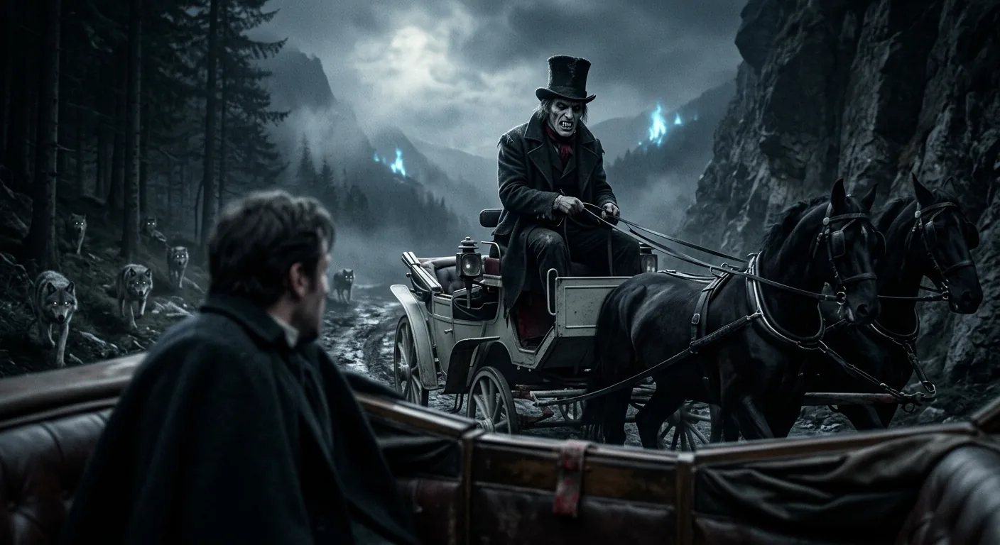
Eastward Into the Land of Superstition
The journal of Jonathan Harker opens with the methodical notations of an English solicitor bound for a business engagement in the eastern reaches of Europe—a journey that carries him, by degrees both geographical and spiritual, from the familiar securities of the West into territories where the maps grow uncertain and the superstitions multiply like shadows at dusk.
Setting forth from Munich on the first of May, Harker traverses Vienna and Buda-Pesth, noting with characteristic precision the tardiness of trains and the gradual transformation of the landscape as he crosses into what he perceives as the Orient's threshold. His passages through Klausenburgh and onward to Bistritz are punctuated by the small pleasures of the careful traveller: paprika hendl and mamaliga, local dishes whose recipes he memorises for his fiancée Mina, and ethnographic observations concerning the Saxons, Wallachs, Magyars, and Szekelys amongst whom he journeys. He has prepared himself admirably, having researched Transylvania at the British Museum, though he confesses he could light upon no map showing the exact locality of Castle Dracula—a detail he records without apparent alarm, attributing the gap to the region's wildness rather than to anything more sinister.
At Bistritz, Harker finds lodging at the Golden Krone Hotel, where a letter from Count Dracula awaits him, cordial in its welcome yet carrying undertones that trouble the reader if not the recipient. It is here that the first unmistakable warnings present themselves. The landlord and his wife grow evasive at the Count's name, crossing themselves in evident fear. The elderly landlady, in considerable distress, implores Harker not to depart on the eve of St. George's Day, when all evil things hold full sway. She presses upon him a crucifix—an object his Anglican sensibilities find somewhat idolatrous, yet which he accepts out of courtesy and now wears about his neck as he writes, confessing he feels not nearly so easy in his mind as usual.
The coach journey through the Borgo Pass proves a masterwork of accumulating dread. Fellow passengers mutter words Harker must look up in his polyglot dictionary: *Ordog*, Satan; *pokol*, hell; *vrolok* and *vlkoslak*, werewolf or vampire. They press gifts upon him and make signs against the evil eye. The magnificent Carpathian scenery—green slopes giving way to snow-capped peaks, pine forests descending like tongues of flame—offers temporary distraction, yet the driver's urgency and the passengers' mounting agitation speak to dangers Harker's rational mind cannot yet credit.
At the summit of the Pass, where Harker expects to find the Count's carriage, there appears instead a momentary hope of reprieve: no conveyance waits, and the coachman suggests he continue to Bukovina. But this respite proves illusory, for a calèche drawn by coal-black horses materialises from the darkness, driven by a tall figure with gleaming red eyes, very red lips, and teeth sharp and white as ivory. One passenger whispers the line from Bürger's *Lenore*: "For the dead travel fast."
The subsequent night journey unfolds as a waking nightmare. The mysterious driver circles endlessly through the darkness, pauses to investigate flickering blue flames, and at one terrible juncture disperses a ring of wolves through nothing more than imperious command and the sweeping of his long arms. Harker, paralysed by fear, can do nothing but observe as the carriage ascends ever higher until, at last, it pulls into the courtyard of a vast ruined castle, its tall black windows showing no ray of light, its broken battlements jagged against the moonlit sky.
Thus delivered to his destination, Harker stands at the threshold of horrors his orderly solicitor's mind has not yet begun to fathom, though the weight of the crucifix against his chest suggests that some deeper instinct already knows what awaits within those silent walls.
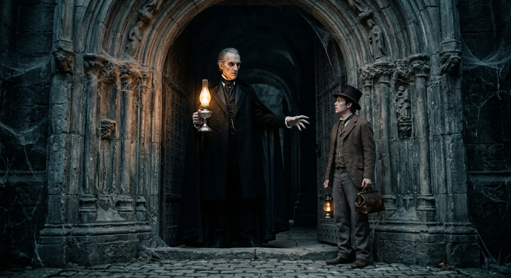
Threshold of the Castle's Master
I must have been asleep when we arrived, for I cannot account for my failure to notice the approach of such a remarkable place as Castle Dracula. The courtyard loomed vast in the darkness, and several dark passages led away under great round arches, though I have yet to see any of it by daylight. The driver—whose prodigious strength I had already marked—set down my luggage before a massive door studded with iron nails and carved with stone worn smooth by centuries, then vanished with his horses into one of those black openings before I could think to question him.
I stood alone in the silence, uncertain what to do. There was no bell, no knocker, and through those frowning walls I doubted my voice could penetrate. In those endless moments, doubts and fears pressed upon me. What sort of grim adventure had I embarked upon? I confess I thought of Mina, and of my recent success in examination—I am now a full-blown solicitor, not merely a clerk—yet such professional pride seemed absurd standing before that ancient fortress in the Carpathians.
At last I heard heavy footsteps and saw light flickering through the door's chinks. Chains rattled, bolts drew back with the grinding protest of long disuse, and the great door swung open to reveal a tall old man clad entirely in black, holding an antique silver lamp. He bade me welcome with courtly formality—"Enter freely and of your own will!"—yet stood motionless as stone until I crossed the threshold, whereupon he seized my hand with a grip cold as death and strong as iron. The resemblance to the driver's crushing handshake struck me at once, though I dared not pursue the thought.
Count Dracula himself carried my luggage through winding passages and up great stairs to comfortable rooms where fires blazed and supper awaited. His hospitality seemed genuine, yet I could not shake a creeping unease. As I ate—he excused himself, claiming he had already dined—I observed him closely: that aquiline face, those peculiarly sharp white teeth protruding over ruddy lips, the pallor, the pointed ears, the coarse hands with hair growing in the palms. When he leaned near me, a wave of nausea seized me unbidden. Outside, wolves howled in the valley below, and the Count's eyes gleamed as he called them "the children of the night."
Over the following days, we discussed his purchase of the Carfax estate near London—a crumbling, gloomy property beside a lunatic asylum—and he expressed his desire to master English speech so thoroughly that no Londoner might mark him as foreign. He spoke of being master here, a *boyar*, and wishing to remain master wherever he goes. I found the castle library stocked with English books, maps, directories—all evidence of meticulous preparation for his removal to England.
Yet strange deficiencies plague this place: no mirrors anywhere, no servants to be seen, and the Count himself never eats or drinks in my presence. When I cut myself shaving, his eyes blazed with demoniac fury and he lunged for my throat—only the crucifix about my neck stayed his hand. He seized my shaving glass and hurled it from the window with terrible strength, shattering it on the stones far below.
I have explored what I can. The castle perches on the edge of a precipice a thousand feet above forested gorges, and every door I try is locked fast. I am all in a sea of wonders; I doubt, I fear, I think strange things I dare not confess even to my own soul. The castle is a veritable prison, and I am a prisoner—though what darker purpose my host intends for me, I cannot yet fathom, and perhaps dare not imagine.
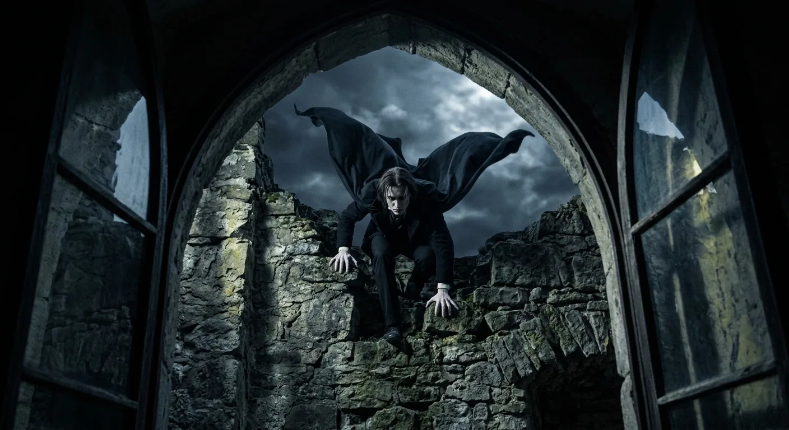
Prisoner in the Castle of Shadows
The full horror of his situation has now descended upon Jonathan Harker with the weight of certainty. Upon discovering himself a prisoner within the castle walls, he confesses to having behaved "much as a rat does in a trap"—rushing wildly from door to window, testing every possible egress—before the conviction of utter helplessness forced him into a grim and methodical calm. He resolves to keep his knowledge and his fears to himself, to watch, to wait, and above all to maintain the careful pretence of an unsuspecting guest before his captor.
The evidence of his isolation mounts with each observation. The Count, he now perceives, performs all menial offices himself—making beds, laying tables—confirming that no servants inhabit this dreadful place. The implication chills him to the marrow: if the Count alone occupies the castle, then it was surely he who drove the coach through those wolf-haunted mountain passes, commanding the beasts with nothing more than a silent gesture of his pale hand. The gifts pressed upon him by the fearful peasants—crucifix, garlic, wild rose, mountain ash—take on new and terrible significance. That crucifix, which his Protestant sensibilities had taught him to regard as idolatrous, now offers inexplicable comfort; he resolves to examine this mystery when circumstances permit.
That night, Harker draws the Count into conversation regarding Transylvanian history, and the old nobleman speaks with passionate intensity of wars and conquests, of the Szekelys and their fierce heritage, of Attila's blood running in his veins. He speaks always in the plural *we*, as though he himself had witnessed the battles of centuries past—a peculiarity Harker notes but cannot yet comprehend. The following evening brings questions of another sort entirely: English law, shipping consignments, the arrangement of multiple solicitors for separate transactions. The Count's acumen is remarkable, his foresight unsettling. He compels Harker to write letters declaring he shall remain a month longer, and the young solicitor, recognising the implicit threat behind those blazing eyes, can do nothing but comply. He writes only formal notes, reserving his true account for shorthand entries that might puzzle his captor's scrutiny.
Then comes the sight that shatters any remaining pretence of normality. Gazing from his window into the moonlit night, Harker observes the Count emerge from a lower casement and crawl headfirst down the sheer castle wall, his cloak spreading about him like dark wings, his fingers and toes finding purchase in the ancient stones "just as a lizard moves along a wall." No human creature could accomplish such a feat. The question that now haunts Harker's every waking moment takes terrible shape: *What manner of creature is this in the semblance of man?*
Driven by desperate curiosity during the Count's absence, Harker explores the castle and discovers a long-abandoned wing where noble ladies once dwelt. There, in the soft yellow moonlight, drowsiness overcomes him despite Dracula's cryptic warning against sleeping elsewhere in the castle. He wakes—or believes he wakes—to find three beautiful women materialising from the shadows, their forms casting no reflection upon the dusty floor. They whisper, they laugh with silvery, inhuman mirth, and one bends towards his throat with lips that part to reveal sharp white teeth. In his shame he confesses to feeling "a wicked, burning desire" for their kiss, yet before those teeth can pierce his flesh, the Count appears in towering fury, hurling the fair woman aside and claiming Harker as his own. The women are promised their reward in time; for now, a writhing bag is thrown to them, and from within issues the unmistakable wail of a child. They fade with their terrible burden into the moonlight, and Harker sinks into merciful unconsciousness.
He wakes in his own bed, the nightmare clinging to him with the persistence of memory rather than dream, knowing now that the perils of this castle extend far beyond his host—and that his usefulness alone preserves his life.
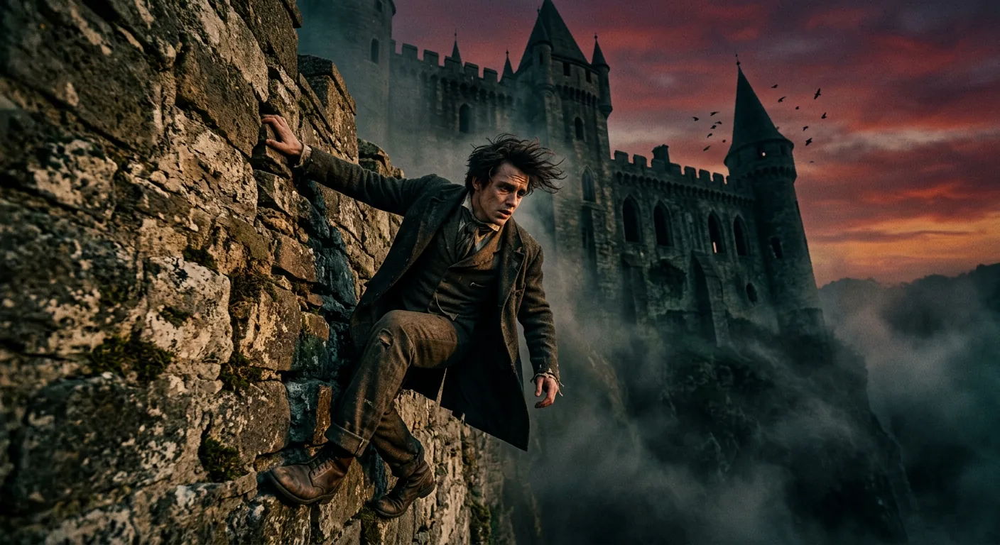
The Span of My Life
I awoke in my own bed with no certain memory of how I came to be there, though small evidences—my clothes folded in a manner not my own, my watch left unwound—suggested that the Count had carried me from that dreadful chamber where the three spectral women had meant to drain my very life. I could not prove it absolutely, yet I took comfort in one particular: my pockets remained intact, and with them this diary, which surely would have been destroyed had my captor discovered it. My room, once a place of such fear, has become a kind of sanctuary now, for nothing can be more dreadful than those awful women who wait—who *are* waiting—to drink my blood.
When I returned by daylight to examine the room where I had encountered them, I found the door forced shut from within, the woodwork splintered by violence. It was no dream, then, and I must act upon this knowledge. Yet acting has proven difficult, for the Count holds me entirely in his power. He commanded me, in his suavest tones, to write three letters—one saying my work was nearly done, another that I was departing, a third that I had already arrived at Bistritz—and when he specified the dates, I understood with terrible clarity: June 12, June 19, June 29. I know now the span of my life. God help me.
I placed my hope briefly in a band of Szgany encamped in the courtyard. These are gipsies peculiar to this region, fearless and lawless, who attach themselves to great nobles. I wrote letters home—one to Mr. Hawkins and one to Mina in shorthand, that she might know something of my situation without the full horror of it—and threw them from my window with a gold piece. But the Count intercepted them both. He burned Mina's letter before my eyes, his face blazing with wicked anger at the strange symbols he could not read, though he returned Hawkins's with mocking courtesy. After that, I found all my papers taken, my travelling clothes gone. He means to impersonate me, wearing my garments as he crawls down the castle wall to post my own death notices in the villages.
I have seen horrors beyond reckoning. A woman came screaming to the gates, begging for her child, and the Count summoned wolves with a mere whisper; before long she was silenced, and the pack streamed away licking their lips. I felt no pity for her, knowing what had become of the infant. What can I do against such a monster?
Yet desperation breeds courage. I resolved to scale the castle wall as the Count himself does and enter his chamber through the window. God helping me, I succeeded. I found his room empty, dust-covered, filled with ancient gold—and beyond it, a passage leading down to a ruined chapel where great wooden boxes lay filled with freshly turned earth. In one of these I discovered the Count himself, lying as if dead yet not dead, his lips red, his eyes open and stony with unconscious hate. I fled without the key I sought.
On the final morning of June, having learned that the Count would depart and leave me to his brides, I attempted one last escape. The great door was locked against me. I descended again to the vault and found him transformed—younger, gorged with blood, his face bloated and mocking. In rage I struck at him with a workman's shovel, but the blow glanced aside, and I was driven back. Now the Szgany have come and gone, taking the boxes with them, and I am left alone with those devils of the Pit.
I shall not remain here to meet their embrace. I mean to scale the wall once more, taking gold for my journey, and make for the precipice if I must—for at its foot, a man may sleep as a man. Goodbye, all. Goodbye, Mina.
And so, with nothing but desperate resolve and the faint hope of God's mercy, I prepare to cast myself upon whatever fate awaits beyond these accursed walls.
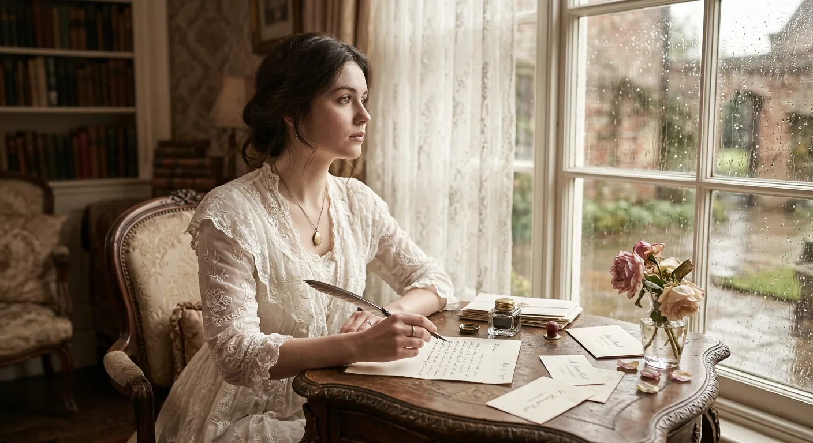
Letters of Love and Longing
The narrative shifts from Jonathan Harker's increasingly anxious journal to a series of intimate letters exchanged between two young women whose friendship runs as deep as sisterhood, their correspondence revealing lives poised on the cusp of transformation. Mina Murray writes first to her dearest Lucy Westenra, apologizing for her long silence with the excuse of an assistant schoolmistress's demanding existence, though her words betray a mind far more occupied with romantic industry than pedagogical drudgery. She has been practising shorthand with tremendous dedication, keeping pace with Jonathan's studies so that she might prove useful to him as wife and secretary both—transcribing his thoughts, typewriting his documents, making herself indispensable in the modern fashion of lady journalists who train themselves to capture every conversation, every observed detail. She mentions, almost in passing, that Jonathan writes from Transylvania and shall return in about a week, though one senses beneath her cheerful domesticity a certain unease at the distance between them, a longing that extends beyond mere geography.
Lucy's reply proves altogether more animated, for she has news that sets her pen racing across the page. She confesses, with the breathless candour that only exists between women who have shared beds and secrets since childhood, that she is in love—deeply, consumingly—with one Arthur Holmwood, though he has not yet spoken the words she longs to hear. Her subsequent letter, however, transforms confession into comedy and comedy into something approaching pathos: in a single day, she has received three proposals of marriage. The first comes from Dr. John Seward, the young superintendent of a vast lunatic asylum, a man of penetrating gaze and resolute demeanour who nonetheless nearly sits upon his hat in his nervousness and fidgets dangerously with a lancet while declaring his devotion. Lucy refuses him gently, and he departs with admirable dignity, though she weeps to see him go broken-hearted.
The second proposal arrives from an American adventurer, Quincey P. Morris, whose colourful frontier slang and tales of far-flung travels have thoroughly charmed her. He asks her to "hitch up alongside" him in phrases more suited to the Texas prairie than an English drawing-room, yet beneath his jollity lies genuine feeling, and when she refuses him too, he takes it standing up, requesting only a kiss to keep off the darkness of his lonely road ahead. Lucy grants it, moved by his nobility toward the unknown rival who has claimed her heart.
Of the third proposal—Arthur's—she can barely speak coherently, for it seems he was scarcely through the door before his arms were around her and the matter was settled. She is engaged, deliriously happy, and filled with that peculiar feminine guilt toward the worthy men she has been obliged to wound.
Meanwhile, Dr. Seward nurses his rejection through work, recording his observations in phonograph rather than pen. His attention fixes upon a patient of singular interest: R. M. Renfield, a man of sanguine temperament and great physical strength whose periods of gloom resolve into fixed ideas that Seward cannot yet penetrate. There is something dangerous lurking in this case, something that the doctor senses but cannot name.
The chapter closes with touching evidence of masculine friendship unbowed by romantic defeat, as Quincey Morris writes to Arthur Holmwood inviting him to share a campfire toast with himself and Jack Seward—three men who have adventured together across the world now united in drinking to Arthur's happiness and the noble heart he has won.
Yet beneath these celebrations of love declared and friendships preserved, shadows are quietly gathering, and Jonathan Harker's promised return from Transylvania remains conspicuously unrealized.
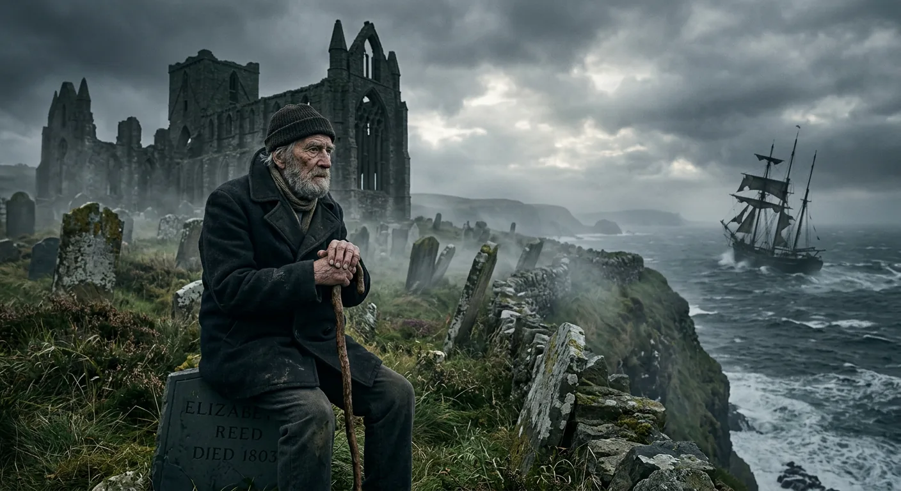
Whitby's Ruins, Legends, and Old Sailors
Mina Murray's journal entries carry us to Whitby, that ancient seaside town where the River Esk winds through its deep valley and red-roofed houses pile upon one another like illustrations from some continental travel volume. Here she has reunited with her dearest Lucy, who appears sweeter and lovelier than ever, her cheeks flushed with a healthy rose-pink that has replaced the anæmic pallor of recent months. Mina documents the landscape with the careful eye of one who finds solace in observation—the noble ruin of the Abbey, the winding steps that lead from town to churchyard, the curious graveyard perched so precariously above the harbour that some graves have tumbled into the sandy pathway below.
It is in this churchyard that Mina encounters Mr. Swales, a gnarled old sailor of nearly one hundred years who professes loud contempt for all manner of superstition and legend. He rails against the tombstones surrounding them, declaring them monuments to lies—for how many commemorate sailors whose bones lie scattered in the Greenland seas or upon distant shores? The old man's irreverent sermonizing upon death and deception provides a dark sort of entertainment, though his mockery carries undertones that trouble both Mina and Lucy, particularly when he reveals that Lucy's favoured seat rests upon the grave of a suicide whose pious mother had driven him to self-destruction.
Yet even the sceptical Mr. Swales cannot maintain his bravado against the gathering storm. On the sixth of August, beneath grey skies and with the sea mist drifting inland, he comes to Mina transformed—gentle, confessional, seeking absolution for his harsh words about the dead. He speaks of the Angel of Death whose trumpet may sound for him at any moment, and gazes out at the tumbling sea with prophetic dread. Something in the wind, he says, tastes and smells like death.
Interleaved with Mina's observations runs Dr. Seward's clinical diary, wherein he documents his growing fascination with the patient Renfield—a peculiar lunatic whose obsessions progress from flies to spiders to sparrows, each creature consumed to feed the next in an ascending chain of predation. Seward coins a term for this madness: zoöphagous, life-eating. The doctor's professional interest mingles with personal melancholy, for he has lately lost Lucy Westenra's hand to another, and throws himself into his work to escape the ache of rejection.
As the chapter closes, Mina's anxieties multiply. Jonathan's silence has stretched to weeks, broken only by a single strange line from Castle Dracula announcing his departure—words that somehow fail to sound like him at all. Lucy has resumed her old habit of sleepwalking, trying doors in the night, searching endlessly for keys. And upon the horizon, steering erratically as though no living hand guides her helm, a Russian ship approaches through the gathering storm.
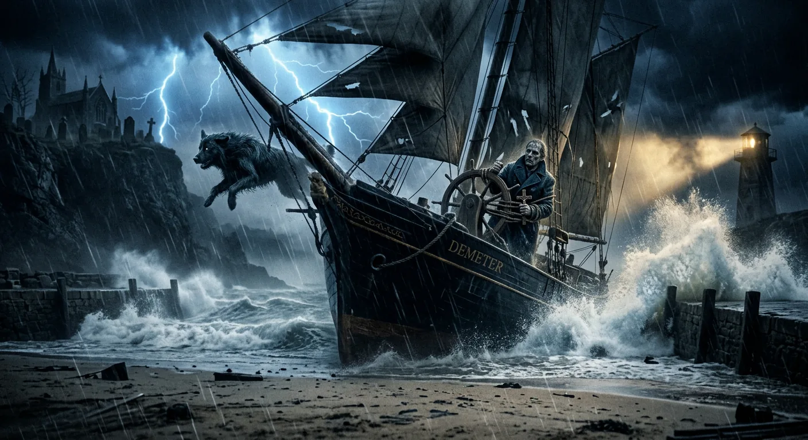
The Storm-Tossed Ship at Whitby
The storm that struck Whitby on that August night arrived with all the terrifying suddenness of divine wrath, though none who gathered on the East Cliff churchyard to admire the magnificent sunset could have anticipated the horrors it would bring to shore.
The evening had been remarkably fine, the kind of summer day that draws holiday-makers to the coast in droves, filling the steamers and crowding the walks along the cliff. Yet certain old salts, those weathered prophets who read the sky as others read scripture, noted the mare's-tails gathering to the north-west and spoke of what was coming. By midnight, an unnatural stillness had settled over the harbour—that oppressive, breathless calm that precedes thunder—and a foolhardy foreign schooner was spotted making westward with all sails set, her officers seemingly ignorant of their peril.
When the tempest broke, it did so with a fury that defied comprehension. The glassy sea transformed within minutes into a roaring, devouring monster, white-crested waves battering the piers and sweeping the lighthouse lanthorns with their spume. Through the chaos of wind and fog and lightning, the searchlight operators caught sight of that same schooner, now rushing toward the harbour mouth with the wind at her back and certain doom before her. Yet by some miracle—*mirabile dictu*—she threaded between the piers at headlong speed and drove herself onto the sand heap at Tate Hill Pier. And there, lashed to the wheel with a crucifix clutched between his bound hands, was discovered the only soul aboard: a dead man, his flesh cut to the bone by the cords that held him to his post.
An immense dog sprang from below at the moment of impact and vanished into the darkness beyond the churchyard, never to be found again.
The schooner proved to be the *Demeter*, a Russian vessel from Varna carrying a peculiar cargo of great wooden boxes filled with mould, consigned to a Whitby solicitor. The captain's log, recovered from a bottle in the dead steersman's pocket, told a tale of mounting horror across the voyage—men vanishing one by one from their watches, whispered sightings of a tall, thin figure that could not be found, a mate driven to madness who threw himself into the sea after discovering some terrible secret in the hold. The captain's final entry spoke of tying himself to the wheel with that which the fiend dared not touch, determined to save his honour and his soul even as death closed upon him.
Mina Murray recorded these events in her journal with understandable fascination, though her greater concern lay with Lucy, whose restlessness had grown more pronounced. The night of the storm, Lucy had risen twice in her sleep-walking state, dressing herself as if compelled by some purpose Mina could not fathom. At the captain's funeral—a touching affair with every boat in harbour following the cortège—old Mr. Swales was found dead on their favourite seat, his neck broken, a look of frozen terror upon his face as though death itself had shown him its countenance. A dog at the funeral refused to approach the grave, howling in fury until forced onto the tombstone, whereupon it collapsed in trembling, abject fear.
Mina watched Lucy's reaction to these accumulated horrors with growing unease, knowing her friend's sensitive nature would transform them into troubled dreams; and yet she could not know that the darkness which had arrived with the *Demeter* had only begun to work its influence upon them all.
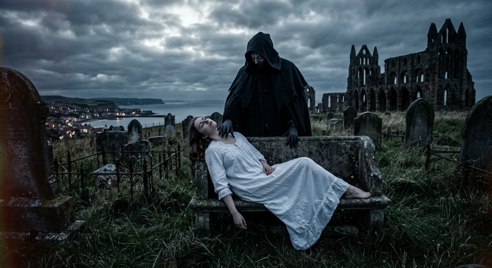
Moonlit Search for the Sleepwalker
In the days following the arrival of the Demeter, Mina Murray continued her journal with the diligence of duty, though weariness pressed upon her like the sea-fog that so often rolled in over Whitby. She recorded a pleasant walk with Lucy, an encounter with some inquisitive cows near the lighthouse that gave them both such a fright as to wipe clean whatever shadows had been gathering in Lucy's mind, followed by a "severe tea" at Robin Hood's Bay in a charming little inn overlooking the seaweed-strewn rocks. That evening brought the inevitable young curate to supper, and both girls fought valiantly against drowsiness—Mina noting with some asperity that bishops might do well to breed a new class of curates who know when young women are tired and decline invitations accordingly. Yet as she watched Lucy sleeping, flushed and sweet, Mina felt a happiness she had almost forgotten: Lucy seemed to have turned the corner at last, her troubles with dreaming perhaps behind her. If only there were news of Jonathan.
But the night brought fresh horror. Mina awoke suddenly to an oppressive emptiness—Lucy's bed was cold and vacant, her nightdress the only garment missing. The hall door stood ajar. With a heavy shawl clutched to her breast, Mina ran out into the moonlit town, across the harbour bridge, up the endless abbey steps to their favourite seat in the churchyard. There, bathed in silver light, Lucy lay half-reclining, and behind her—bent over her—something dark with gleaming red eyes. Mina cried out; the thing raised its head, then vanished as the clouds shifted. When Mina reached her, Lucy was alone, breathing in long, terrible gasps, her hand clutching instinctively at her throat. Mina wrapped her carefully in the shawl, fastening it with a safety-pin, and led the sleepwalking girl home through the silent wynds, her heart pounding with fear for Lucy's health and reputation alike.
By morning, Lucy seemed unharmed—indeed, better than she had looked in weeks—though Mina noticed two small red punctures at her throat where, she supposed, she had clumsily pricked her with the pin. The wounds were tiny, surely nothing to worry over. Yet as the days passed, though Mina locked their door each night and tied the key to her wrist, Lucy continued to rise in her sleep, drawn inexplicably to the window, where once Mina glimpsed something like a great bird beside her. Lucy grew paler, weaker, more languid, even as she ate and slept well. The little wounds on her throat refused to heal; if anything, they grew larger, their edges faintly white.
Meanwhile, businesslike correspondence between Whitby solicitors and London carriers confirmed the delivery of fifty boxes to the ruined chapel at Carfax—the ancient estate near Dr. Seward's asylum. And in Buda-Pesth, Sister Agatha wrote at last to Mina: Jonathan had suffered a violent brain fever, raving of wolves and blood and demons, but was recovering. Mina would go to him at once, to nurse him and perhaps to marry him there, her heart full of anxious joy.
Back at the asylum, Dr. Seward observed a strange change in Renfield, who sniffed the air like a hound and spoke of "the Master" being at hand. That night the lunatic escaped, scaling the wall into Carfax's grounds, where Seward found him pressed against the chapel door, pledging his service to some unseen presence within. It took four men to restrain him, and even now, chained in his padded cell, Renfield whispered with terrible patience: "It is coming—coming—coming!"
And indeed, something was coming—something that had already begun its work upon Lucy, whose mysterious decline would soon demand explanations that no safety-pin could provide.
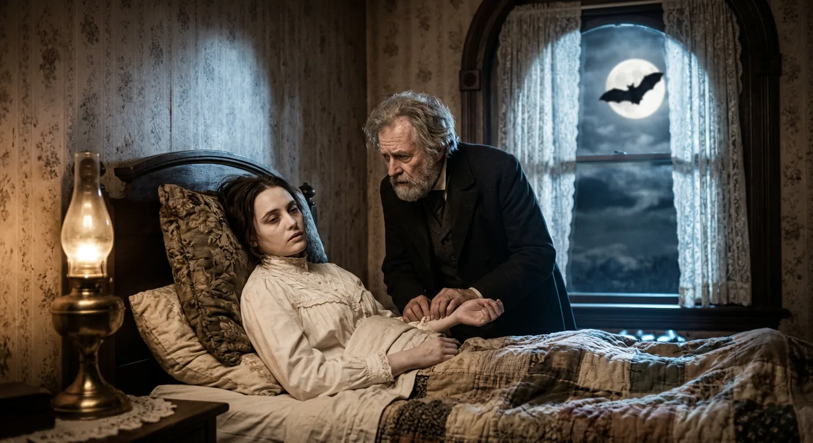
Vows at the Bedside
In a letter dated from Buda-Pesth, Mina Harker writes to her dearest Lucy of all that has transpired since their parting at the Whitby railway station, and the tale she tells is one of joy shot through with shadows. She recalls little of her journey—the boat to Hamburg, the train onward—for her mind was fixed wholly upon reaching Jonathan, and upon the sleep she would need to nurse him properly. What she found at the hospital, however, was not the man she knew but a mere wreck of himself, thin and pale and weak, all his quiet dignity vanished and his dear eyes emptied of resolution. He remembers nothing of what befell him, or so he wishes her to believe, and Mina resolves never to press him, for the terrible shock that wasted him might yet tax his poor brain beyond endurance. Sister Agatha, that good creature, confesses only that his ravings in fever spoke of dreadful things no mortal can treat of—though she assures Mina there was no wrongdoing on his part, nor any rival woman to fear. When Jonathan wakes, he gives Mina his notebook with solemn words, begging her to keep its secrets unless some stern duty should compel their revelation. They are married that very afternoon in the hospital, Jonathan sitting propped among pillows, and afterward Mina wraps the book in white paper and pale blue ribbon, sealing it with her wedding ring as an outward sign of their trust.
Meanwhile, Lucy writes from Whitby in seemingly gay spirits, speaking of Arthur and their long walks and drives, her restored appetite and untroubled sleep—though already there are omens the reader cannot miss. By the twenty-fourth of August she has returned to Hillingham and begun keeping a diary in imitation of Mina, confessing vague fears, horrid dreams she cannot remember, and a weakness that drains her. There is scratching at her window at night, and her throat pains her, and she grows so pale and awful that Arthur, in desperation, summons his old friend Dr. John Seward.
Seward's examination reveals no functional cause for Lucy's decline, yet she is woefully different—bloodless, lethargic, plagued by dreams and difficulty breathing. He writes at once to his old master, Professor Van Helsing of Amsterdam, who arrives, examines the patient, and departs again with grave reticence, saying only that this is no jest but life and death, perhaps more. The telegrams that follow chart Lucy's condition with terrible brevity: better on the fourth, greatly improved on the fifth, then on the sixth a desperate cry—"Terrible change for the worse. Come at once; do not lose an hour."
Threaded through these anxious dispatches runs Dr. Seward's continuing study of his zoophagous patient, Renfield, whose strange cycles of violence and calm seem governed by the rising of the moon and the setting of the sun. He escapes twice to the grounds of the deserted house, pressing himself against the old chapel door, and once grows suddenly quiet while gazing at a great bat flapping its silent, purposeful way westward. "You needn't tie me," he says. "I shall go quietly." Seward notes the ominous calm and wonders what malign influence might govern such natures—an influence whose shadow now seems to reach, with gathering menace, toward Lucy herself.
With Van Helsing summoned urgently back to London and Lucy's condition worsening by the hour, the scattered threads of journal and letter begin to draw together, hinting that the horrors Jonathan could not name may have followed him home.
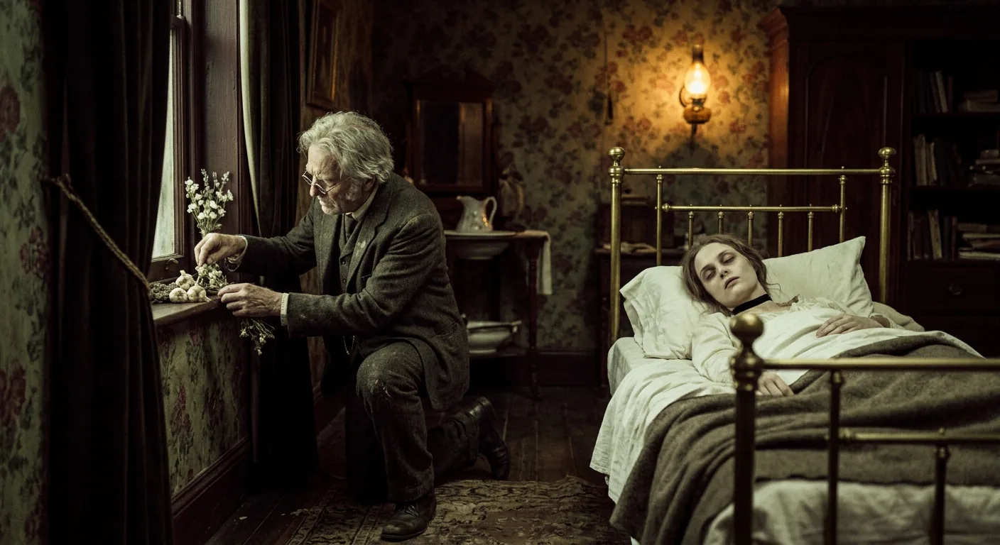
The Husbandman's Patience
The chapter opens with Dr. Seward's letter to Arthur Holmwood, dated September 6th, bearing news both troubling and practical—Lucy has suffered a setback, though the situation has yielded one advantage: Mrs. Westenra's concern has allowed Seward to bring his old master, Professor Van Helsing, into Lucy's care without arousing undue alarm. This arrangement proves essential, for Mrs. Westenra's weak heart makes any shock potentially fatal, and Lucy's condition has grown increasingly grave.
When Van Helsing arrives at Liverpool Street, he counsels Seward with characteristic riddles about patience and knowledge, speaking of unripened corn and careful husbandry—cryptic warnings that what he suspects must be allowed to mature before it can be spoken aloud. His manner is grave, his meaning obscure, but his urgency becomes plain enough when they reach Hillingham and find Lucy in a state of ghastly deterioration. She lies chalky pale, her lips bloodless, her breathing laboured—so depleted that Van Helsing declares she will die without immediate transfusion.
Providence delivers Arthur to the door at this precise moment, having read between the lines of Seward's letter, and the Professor seizes upon the young lover's vigorous health and pure blood with barely concealed relief. Arthur gives willingly—*My life is hers*—and colour returns to Lucy's wasted cheeks even as pallor claims his own. Yet when Van Helsing adjusts her pillow afterward, the narrow velvet band at her throat shifts to reveal something that arrests him mid-breath: a red mark, two small punctures over the external jugular, worn-looking at the edges. Seward examines them and can make nothing of them—such wounds could not account for her massive blood loss, for the bed would be drenched scarlet. Van Helsing offers no explanation, only departs abruptly for Amsterdam to consult his books, leaving Seward with a solemn warning: *Remember, she is your charge. If you leave her, and harm befall, you shall not sleep easy hereafter.*
Seward keeps his vigil faithfully, and Lucy recovers enough to express her dread of sleep itself—*a presage of horror*—before his promise of protection allows her to rest peacefully. Yet when exhaustion compels Seward to take his own rest on the following night, lying on a sofa in the adjoining room, Van Helsing returns at dawn to find their work utterly undone. Lucy lies deathlike once more, white as a corpse, her gums shrunken back from her teeth. Another transfusion is performed, this time with Seward's own blood, and though Lucy revives again, the Professor's response is not relief but grim preparation—a parcel of garlic flowers arrives from Haarlem, and he proceeds to rub them over every window sash, door jamb, and fireplace, fashioning a wreath for Lucy to wear about her throat.
When Lucy protests that garlic is merely common kitchen fare, Van Helsing's iron jaw sets with sudden ferocity: *No trifling with me! I never jest!* The old professor's actions seem to Seward more like spell-work against evil spirits than any medicine known to science—and when he says as much, Van Helsing answers quietly, *Perhaps I am.*
As they depart Hillingham that night, the Professor speaks of peaceful sleep at last, confident in his preparations. But Seward, remembering how his own confidence of two nights before had ended in disaster, feels only dread settling upon him like unshed tears—a foreboding that whatever darkness stalks Lucy Westenra has not yet finished its work.
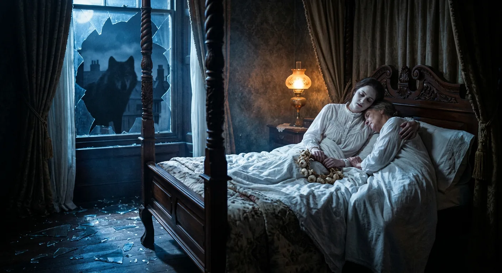
Garlic Removed, Darkness Returns
The chapter opens with Lucy Westenra's diary entry of the twelfth of September, in which she writes with almost childlike gratitude of dear Dr. Van Helsing's solicitous care—though she cannot quite fathom his fierce insistence upon those peculiar, strong-smelling flowers. She confesses she has grown rather fond of the garlic, finding peace in its odour, and likens herself to Ophelia adorned with maiden strewments as she settles into what she hopes will be restful sleep. The flapping at her window no longer fills her with such dread.
Yet the reader's relief is short-lived. The following morning, Dr. Seward accompanies Van Helsing to Hillingham, where Mrs. Westenra greets them with cheerful news: Lucy slept soundly, so soundly that the good mother thought it wise to remove those dreadful-smelling flowers and open the window a crack for fresh air. The effect upon Van Helsing is immediate and terrible. His face turns ashen grey, though he maintains composure until the lady withdraws—whereupon he breaks down in a manner Seward has never witnessed, beating his palms together in helpless despair, crying out against the cruel workings of fate. The poor mother, all unknowing, has undone his careful protections. They rush to Lucy's room and find her pale as death once more, necessitating yet another transfusion—this time from Van Helsing's own veins, for Seward has already given too much.
Four days pass in relative peace. Lucy grows stronger, the garlic arrives daily from Haarlem, and Van Helsing maintains his watchful vigil. But he must depart briefly for Amsterdam, leaving Lucy unguarded on the night of the seventeenth—the very night fate conspires most wickedly against them.
A curious interlude appears in the form of a *Pall Mall Gazette* interview with Thomas Bilder, keeper at the Zoological Gardens, who recounts the escape of a grey Norwegian wolf called Bersicker. His tale is laced with cockney colour and philosophical observation, yet threaded through it is the sinister figure of a tall, thin stranger with hooked nose, pointed beard, and red eyes—a gentleman who stroked the wolf's ears with uncanny familiarity before departing. The wolf escaped that very night, drawn by some force the keeper cannot explain, only to return the following evening with its head cut and bloodied from broken glass.
Meanwhile, Dr. Seward faces his own crisis: Renfield attacks him with a dinner-knife, wounding his wrist, then falls to the floor to lap up the spilled blood like a dog, repeating with terrible conviction, *"The blood is the life!"* Seward, exhausted and weakened from his own generous donations to Lucy, retires to much-needed rest—unaware that Van Helsing's urgent telegram has been delayed twenty-two hours.
The chapter reaches its dreadful climax in Lucy's own memorandum, written as a final testament. She recounts the flapping at her window, the howling in the shrubbery, the crash of breaking glass, and the appearance of a great gaunt grey wolf's head through the shattered pane. Her mother, frightened beyond endurance, tears away the protective garlic wreath and collapses dead in Lucy's arms. The maids are found drugged senseless from laudanum-laced sherry. Lucy, alone with her mother's corpse, the wolf howling outside, and strange motes circling in the blue-burning lamplight, writes her farewell to Arthur and commends herself to God.
As Seward hastens belatedly toward London, the reader understands with mounting horror what awaits him at Hillingham.
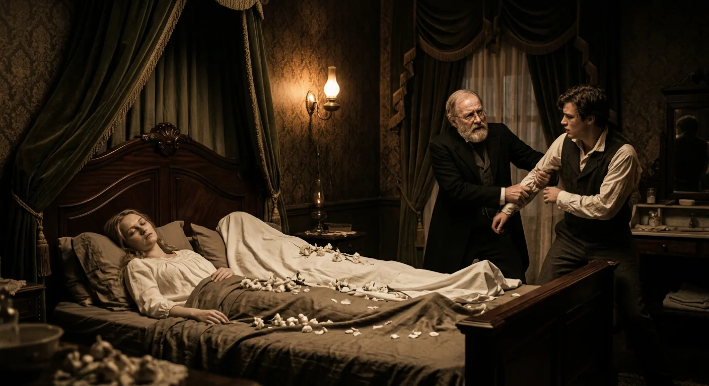
A House of Death and Desperate Hope
The eighteenth of September dawned with dread already gathering at the edges of Dr. Seward's consciousness, though he could not yet know how thoroughly that dread would be justified before the day was spent. Arriving early at Hillingham, he found the house sealed in an ominous silence—no servant answered his increasingly frantic knocking, and a terrible fear began to coil about his heart. Was this desolation merely the laziness of household staff, or another link in that awful chain of doom drawing ever tighter around Lucy Westenra?
Van Helsing arrived moments later, equally alarmed, and together they forced entry through a kitchen window, only to discover the servant-women collapsed upon the dining-room floor, their stertorous breathing and the acrid reek of laudanum revealing they had been drugged insensible. The two men ascended with white faces and trembling hands to Lucy's chamber, where a scene of Gothic horror awaited them: Mrs. Westenra lay dead beneath a white sheet, her face frozen in an expression of terror, whilst Lucy herself lay deathly pale beside her, the protective garlic flowers displaced to her mother's bosom and the familiar wounds upon her throat appearing more horribly white and mangled than ever before.
Yet Lucy lived still—barely. Van Helsing worked with frenzied desperation, rubbing brandy upon her lips and wrists whilst Seward roused the befuddled maids to prepare hot water and fire. Providence delivered Quincey Morris to them at their moment of greatest need; he had come bearing Arthur Holmwood's anxious telegram and offered himself immediately for yet another transfusion of blood. "A brave man's blood is the best thing on this earth when a woman is in trouble," Van Helsing declared, though the operation this time yielded diminished returns—Lucy's body responding ever more feebly to treatment.
The days that followed brought Lucy no recovery, only a gradual and terrible transformation. Her teeth appeared longer and sharper; her breathing grew harsh and ragged in sleep, yet softened when she woke. Arthur arrived to keep vigil with his beloved, and during one fleeting moment of consciousness, Lucy beckoned him to kiss her in a voice voluptuously altered—whereupon Van Helsing seized the young man with astonishing violence, crying "Not for your life! Not for your living soul and hers!" In her final lucid moment, Lucy thanked the Professor as her true friend and begged him to guard Arthur and grant her peace.
Then her breathing ceased entirely. Van Helsing pronounced her dead, and Seward, gazing upon her strangely beautified corpse, observed that peace had come to the poor girl at last. But the Professor's response chilled him to the marrow: "Not so; alas! not so. It is only the beginning!"
Meanwhile, letters from Mina Harker arrived at Hillingham—unopened, unread—bearing news of her happiness with Jonathan and the death of kind Mr. Hawkins, whilst a report from Dr. Hennessey detailed Renfield's violent outbreak against workmen delivering wooden boxes to the neighbouring estate, the patient raving that he must protect his "Lord and Master" from robbery and murder.
And so, as Lucy's body lay still in death yet somehow altered, the threads of a darker design continued weaving themselves together, drawing ever closer to a revelation that would shatter all rational understanding of the horrors yet to come.
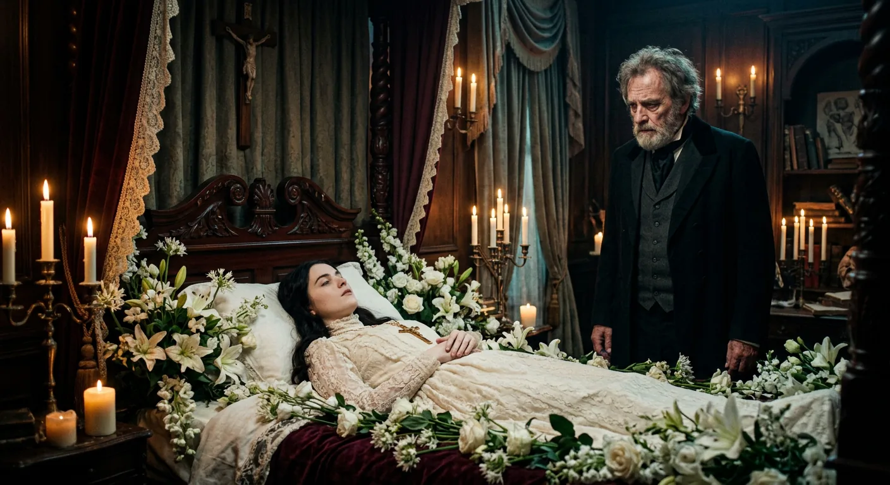
Death's Beauty and Dark Preparations
The funeral arrangements proceeded with all the ghastly efficiency one might expect from an undertaker whose staff seemed to share in his obsequious professionalism—the woman attending to Lucy's body even remarked upon what a privilege it was to work with so beautiful a corpse, assuring Dr. Seward that the deceased would "do credit to their establishment." Such commentary, however well-intentioned, struck a discordant note against the solemnity of the occasion. Van Helsing remained ever watchful, never straying far from the proceedings, and took upon himself the examination of Lucy's personal papers—not merely for legal propriety, but to ensure that nothing of her private thoughts might fall into strange hands. Among these documents he found letters, memoranda, and a newly begun diary, all of which he secured for safekeeping until Arthur might grant permission for their use.
When Seward and Van Helsing visited the death-chamber that evening, they found Lucy transformed by the undertaker's arts into a vision of serene beauty, surrounded by white flowers in a room made to resemble a small *chapelle ardente*. Yet something troubled the Professor deeply. He placed wild garlic among the blooms and hung his own gold crucifix over Lucy's mouth before drawing the sheet back over her face. Later that night, he made a request that shook Seward to his core: he wished to cut off Lucy's head and remove her heart. Though Seward protested—what purpose could such mutilation serve for a girl already dead?—Van Helsing pleaded for trust, reminding his friend of all the inexplicable measures he had taken throughout Lucy's illness, measures which Lucy herself had blessed with her dying gratitude. Reluctantly, Seward agreed to assist.
But morning brought an abrupt change. The crucifix had been stolen in the night by a servant who, thinking it valuable, had unknowingly undone whatever protection Van Helsing had intended. The Professor recovered the object but declared it was now "too late—or too early" to proceed with the operation. They must wait.
The solicitor arrived at noon with news that Mrs. Westenra's estate passed entirely to Arthur, now Lord Godalming following his own father's death. When Arthur came to say his farewell to Lucy, he was shaken by how radiantly beautiful she appeared—more lovely than in life—and asked tremblingly whether she was truly dead. Van Helsing, too, confessed he had momentarily doubted it himself. Arthur granted the Professor full permission to examine Lucy's papers, trusting implicitly in his noble purpose, though he could not yet understand it.
Meanwhile, Mina Harker recorded her own sorrows: the burial of Mr. Hawkins, the return to London with Jonathan, and a disturbing encounter on Piccadilly. Jonathan had glimpsed a tall, dark stranger with cruel features and teeth pointed like an animal's, and his reaction was one of pure terror—he whispered that this was "the man himself," the Count, somehow grown young. The episode triggered another spell of Jonathan's nervous malady, leaving Mina resolved to finally open his journal and learn what horrors he had witnessed abroad.
The chapter closes with Seward declaring his diary finished, Lucy now laid to rest in her family's marble tomb in Hampstead. Yet the newspapers tell of children going missing on the Heath, lured away by a "bloofer lady," each returning with small wounds upon the throat—and as these strange reports multiply, it becomes clear that whatever darkness surrounded Lucy Westenra has not been buried with her at all.
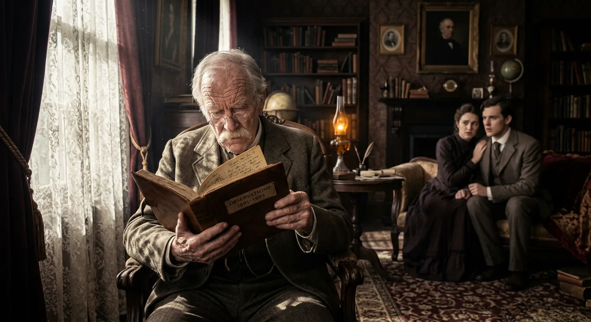
Threads of Truth Begin to Weave
The days that follow Jonathan's return to Exeter prove a strange admixture of domestic comfort and mounting dread, for Mina Harker finds herself caught between her duties as a new wife and the terrible weight of her husband's foreign journal, which she has at last read in its entirety. Jonathan himself seems improved by the demands of his professional responsibilities—grateful, perhaps, for any distraction from the horrors that continue to haunt him—yet Mina cannot help but wonder at the truth of what he recorded in those pages. Was it brain fever that produced such fantastic terrors, or did some genuine evil befall him in that distant castle? The question presses upon her all the more urgently now that she has witnessed Jonathan's violent shock upon glimpsing a stranger in London, a man whose appearance sent her husband reeling into a near-collapse. She resolves to prepare herself for whatever solemn duty may arise, transcribing both their journals on the typewriter so that the evidence might be ready should others need to see it.
Into this atmosphere of anxious waiting comes a letter from Amsterdam—from Professor Van Helsing himself, the learned man who attended poor Lucy in her final illness. He writes with urgency and curious formality, imploring Mina to meet with him regarding matters of grave importance, though he cannot yet reveal their nature. Mina agrees at once, half-hoping the professor might illuminate Jonathan's condition and half-dreading what he might confirm about her dear friend's death.
The meeting itself proves extraordinary. Van Helsing arrives at the Harkers' residence with an air of scholarly intensity, his broad forehead and penetrating eyes suggesting both intellect and determination. He is deeply moved by Mina's typewritten account of Lucy's sleepwalking at Whitby, declaring it to be "as sunshine" in opening a gate to truths he has been pursuing. Yet it is the revelation of Jonathan's journal that produces the most profound effect: after reading it through, the professor returns with a hand-delivered letter assuring Mina that everything her husband recorded is true. The Count exists. The horrors were real. And Jonathan, far from being mad, has proven himself a man of remarkable courage.
This validation transforms Jonathan utterly. Where before he had moved through his days in a fog of doubt, now he stands firm, declaring himself unafraid even of the Count. He and Mina receive Van Helsing at breakfast the following morning, and the professor departs by train with their collected papers, deeply grateful for their assistance and profoundly unsettled by something he glimpses in the morning newspaper—a report from Hampstead concerning children found with strange wounds upon their throats.
It falls to Dr. Seward's diary to record what Van Helsing makes of this intelligence. Returning to London in a state of barely contained agitation, the professor confronts his former pupil with a philosophical challenge: to believe in things that lie beyond the comfortable boundaries of science and reason. The children's wounds, he insists, were not made by the same creature that attacked Lucy. They were made *by* Lucy herself—a revelation that leaves Seward reeling and the reader bracing for the darker truths yet to be unveiled.
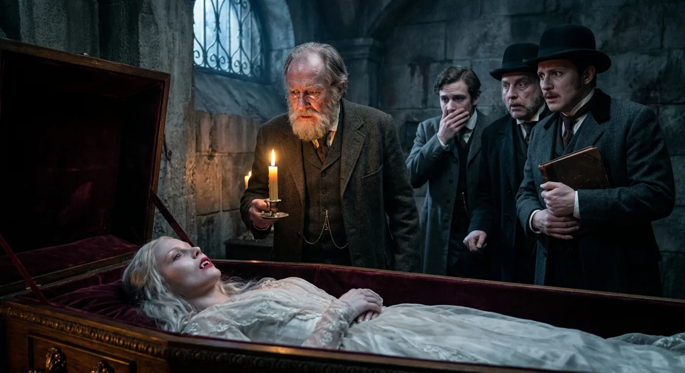
The Bloofer Lady Revealed
The chapter opens with Dr. Seward's violent indignation at Van Helsing's unspoken implications about Lucy—his rage so fierce that he strikes the table and accuses his old friend of madness. Yet the Professor's tender, weary countenance calms him almost at once, and Van Helsing explains his careful, circuitous approach: he has sought to be gentle in breaking truths that no rational mind would readily accept. The proof he proposes is twofold—first to visit the child in hospital, then to spend the night in the churchyard where Lucy lies buried.
At the North Hospital, the attending physician shows them puncture wounds on the child's throat that bear unmistakable resemblance to those upon Lucy's own neck. Dr. Vincent speculates about escaped bats or exotic specimens from the Zoological Gardens, mentioning in passing both a loose wolf and the local children's strange fascination with the "bloofer lady." Van Helsing cautions that the child must be kept indoors, for another night exposed would prove fatal.
After dining at Jack Straw's Castle amid oblivious bicyclists, the two men make their way through deepening darkness to the Westenra tomb. Inside, by the feeble glimmer of a candle, Van Helsing opens the coffin with turnscrew and fret-saw. Seward braces himself for the stench of week-old death—but finds instead an empty casket. His rational mind grasps desperately for explanations: body-snatchers, perhaps, or duplicate keys. Van Helsing only sighs and bids him wait.
Their vigil among the headstones stretches through the chill hours until, near dawn, Seward glimpses a white streak moving between the yews. Van Helsing intercepts it first—a tiny child, sleeping in his arms, its throat unmarked. They deposit the child where a policeman will find it and return home, Seward's doubts still stubbornly intact.
The following afternoon they return to the tomb in daylight. This time the coffin is occupied. Lucy lies within, more radiantly beautiful than in life, her lips redder, her cheeks blooming with impossible colour. Van Helsing draws back those crimson lips to reveal canine teeth grown sharper than before—the instruments, he declares, with which the children have been bitten. He speaks of the Un-Dead, of Lucy's unique condition as one turned while sleep-walking, and of what must be done: the head severed, the mouth filled with garlic, a stake driven through the heart.
Yet Van Helsing stays his hand. Arthur must witness this himself, must pass through his own bitter waters before they can act. He sends Seward home to the asylum and remains alone to seal the tomb with garlic and crucifix against Lucy's nightly wanderings. His note, left undelivered, reveals his grim awareness of the greater enemy—the cunning Un-Dead who made Lucy what she is and who may yet seek this place.
When Van Helsing later gathers Arthur, Quincey Morris, and the reluctant Seward, Arthur's outrage at the proposed desecration is absolute. He will not consent to mutilation of his beloved's body. But Van Helsing's patient, sorrowful appeal—his reminder of the blood he gave, the nights he watched, the duty he bears to the living and the dead alike—at last moves Arthur to agree, however brokenly, to accompany them and witness whatever truth awaits in that cold vault beneath Kingstead churchyard.
And so the four men prepare to descend once more into Lucy's tomb, where the evidence of their own senses must at last confront the horror that rational minds have laboured so desperately to deny.
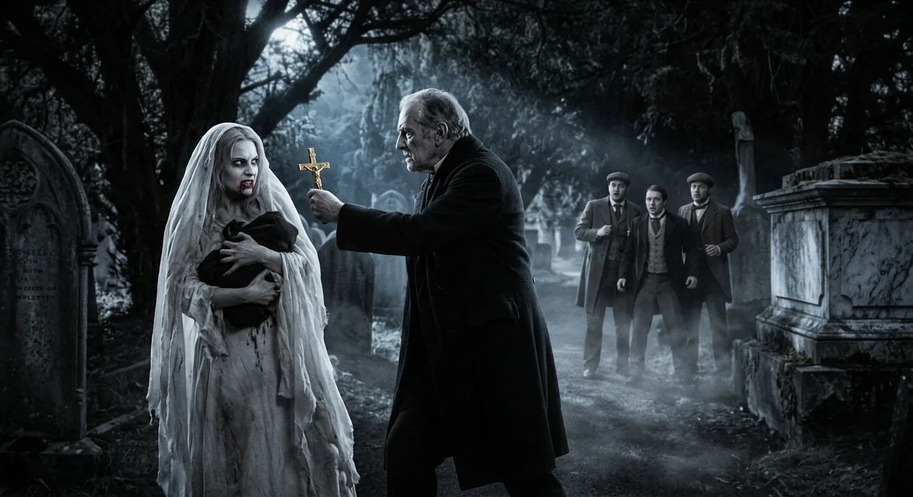
The Empty Coffin's Vigil
It was just quarter to twelve when the men—Seward, Van Helsing, Arthur, and Quincey Morris—scaled the low churchyard wall and made their way through the dark toward Lucy's tomb. The night offered only fitful moonlight between the racing clouds, and each kept close to the other, drawing what comfort could be had from their grim fellowship. Van Helsing led them to the vault's iron door, and finding none willing to enter first, solved the matter by stepping across the threshold himself. Inside, by the concentrated glow of his dark lantern, he directed their attention to the coffin and asked Seward to confirm what they had witnessed before: that Miss Lucy's body had lain within. Seward confirmed it. Yet when the lid was removed and the leaden casing forced back, they found only emptiness—the coffin was void of its occupant.
Quincey, ever practical, pressed the Professor for assurance that this was no trick of his own devising. Van Helsing swore upon all he held sacred that he had not touched her, recounting his previous vigils—the garlic laid upon the doors, the sighting of a white figure moving through the yews, the rescued child found among the graves. Tonight he had deliberately removed his protections, and so the Un-Dead had risen once more.
They waited outside, concealed among the ancient yews and cypresses, while the Professor sealed the tomb's crevices with crumbled Host worked into strips of putty—a measure that appalled and awed them in equal portion, for they understood that a man of Van Helsing's reverence would not employ so sacred an instrument unless the danger were absolute. The night seemed to press upon them: tombs gleamed ghastly white, branches creaked with ominous meaning, and the distant howling of dogs sent shivers through their blood.
Then she came—a white figure gliding down the avenue, a dark-haired woman in grave cerements clutching something to her breast. The moonlight revealed Lucy Westenra, though changed beyond recognition: sweetness turned to adamantine cruelty, purity to voluptuous menace. Blood stained her lips and chin. When she saw the men barring the tomb, she snarled like a cornered cat and fixed upon Arthur with hell-lit eyes, beckoning him with honeyed, diabolic tones: *Come to me, my husband.* Arthur, entranced, opened his arms—but Van Helsing thrust his golden crucifix between them, and the thing that had been Lucy recoiled with a face of baffled malice, unable to pass the sealed threshold. At Arthur's broken consent, the Professor removed enough of the sacred barrier to permit her corporeal form to slip through the narrowest interstice, then restored the seal. They left the rescued child where police would find him and returned home to what fitful sleep they could manage.
The following afternoon they gathered again—all in black, by unspoken accord—and waited until the sexton locked the gate behind a midday funeral. Alone at last, they entered the tomb. Van Helsing lit candles, unpacked his leather bag, and laid out his instruments: soldering iron, operating knives, a heavy hammer, and a wooden stake sharpened to a fine point. He explained that only by destroying the Un-Dead could Lucy's soul be freed and her victims spared further corruption. Arthur, pale as snow yet resolute, accepted the terrible office. With stake positioned over the heart and hammer raised, he struck—again and again—while the body writhed and shrieked, until at last it lay still, and the face in the coffin was Lucy once more: sweet, pure, at peace.
They sawed off the stake's protruding end, severed the head, filled the mouth with garlic, and sealed the coffin. Outside, the sun shone and birds sang, and something of joy returned to them—tempered, mournful, but real.
Van Helsing, however, reminded them that a greater task remained: to find the author of all this sorrow and stamp him out. Each man took his hand and pledged himself to the bitter end. Two nights hence, they would meet for dinner and council, and the Professor would introduce two others not yet known to them—for their true hunt was only now beginning.
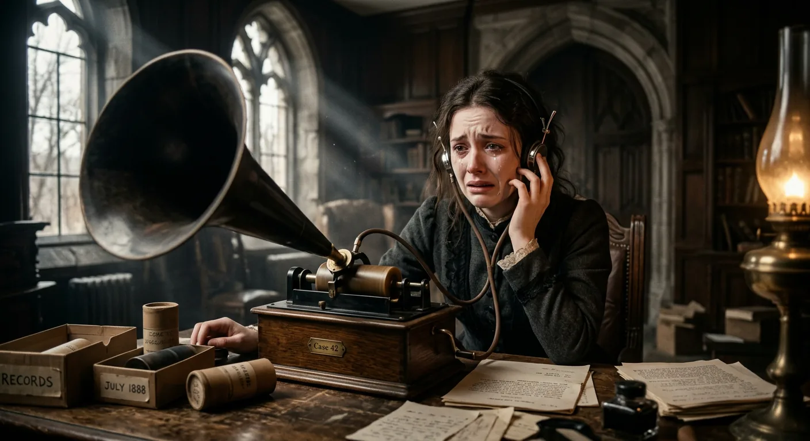
Diaries, Phonographs, and Shared Secrets
Upon their arrival at the Berkeley Hotel, Professor Van Helsing discovered a telegram from Mina Harker announcing her imminent arrival by train, with Jonathan remaining at Whitby to pursue important inquiries. The Professor, unable to stay owing to his own pressing business in the provinces, charged Dr. Seward with the task of meeting this "pearl among women" at the station and conveying her to the asylum, where accommodations were to be prepared forthwith. Before departing for Liverpool Street, Van Helsing pressed into Seward's keeping a packet of papers—typewritten copies of Jonathan Harker's extraordinary diary from abroad and Mrs. Harker's own journal from Whitby—with solemn instructions to study them well, for they contained matter that might herald either their collective doom or the final knell of the Un-Dead who walk the earth.
At Paddington, Seward encountered a sweet-faced, dainty-looking girl who identified him from poor dear Lucy's description, and in that moment of mutual recognition—each blushing at the unspoken acknowledgment of their shared grief—a tacit understanding passed between them. Mrs. Harker arrived with her luggage and, notably, a typewriter, that instrument destined to prove invaluable to their cause. Though she knew the place was a lunatic asylum, Seward observed she could not repress a shudder upon entering its grounds.
What followed was an exchange of remarkable delicacy and consequence. When Mina discovered that Seward kept his diary by phonograph, her curiosity was piqued—yet the doctor's evident horror at the thought of her hearing his recorded account of Lucy's death spoke volumes. The impasse was broken only when Mina, with characteristic directness and courage, offered to transcribe his cylinders in exchange for the trust he might place in her after reading the Harkers' own documents. Thus began a mutual unburdening: Seward absorbed Jonathan's harrowing Transylvanian narrative whilst Mina, listening through the forked metal earpieces, learned the terrible truth of her dear friend's death and unholy resurrection.
The work of collation proceeded with methodical urgency. Jonathan returned from Whitby bearing confirmation that all fifty boxes of Transylvanian earth had been deposited at the old chapel at Carfax, though some might since have been removed. Mina, meanwhile, typed manifold copies of every document, arranging them in chronological order so that when Lord Godalming and Mr. Morris arrived, they might be furnished with a complete narrative of events. Both men, still raw with grief over Lucy, found in Mina a sympathetic presence; Lord Godalming, breaking down utterly, wept upon her shoulder like a wearied child, whilst Mr. Morris bore his sorrow with brave quietude. Each pledged eternal friendship to this remarkable woman who had, in a single afternoon, become the binding force of their fellowship.
By evening, all materials stood ready, awaiting only Van Helsing's return to commence their council of war against the Count.
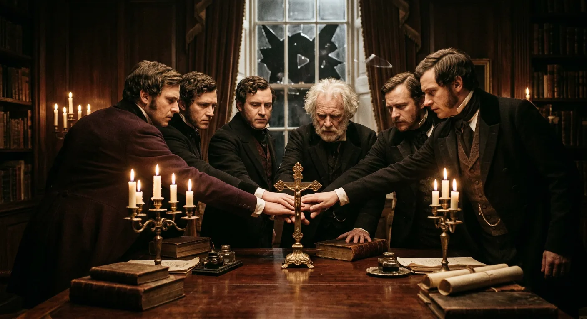
Renfield's Unexpected Lucidity
The thirtieth of September found Dr. Seward's old house transformed at last into something resembling a home—a curious metamorphosis wrought, it would seem, by the domestic ministrations of Mrs. Harker, whose organizational genius had already rendered all their scattered diaries and letters into a single comprehensible chronicle. The assembled company—Godalming, Morris, and the Harkers—had studied these documents with the gravity befitting soldiers preparing for war, though what manner of war none could yet fully articulate.
Mrs. Harker, displaying that particular blend of feminine curiosity and quiet determination which so characterized her, requested an audience with Renfield. The lunatic received her with unexpected ceremony, hastily consuming his collection of flies and spiders before her entrance—a grotesque tidying that spoke volumes of his peculiar jealousies. What followed proved most extraordinary: in her presence, this pronounced madman discoursed with the polish of a gentleman scholar, speaking of logical fallacies in Latin and discussing his former delusions with the clinical detachment of a philosopher examining another man's case. His parting words to her, however, struck a dissonant chord: "I pray God I may never see your sweet face again."
Van Helsing arrived that evening with his characteristic vigour, though his pronouncements carried shadows. He praised Mrs. Harker effusively—"She has man's brain and woman's heart"—yet declared that after this night, she must be excluded from their terrible work. The proximity of Dracula's Carfax property to the asylum itself occasioned the Professor considerable alarm, and one sensed beneath his philosophical resignation the bitter weight of what might have been prevented.
That evening, gathered round Dr. Seward's study table like a council of war, Van Helsing delivered his comprehensive treatise upon the vampire's nature—its fearsome powers and, more crucially, its limitations. The Count could command wolves and bats, dissolve into mist, grow young upon blood; yet he remained prisoner to ancient laws: unable to enter unbidden, powerless during daylight hours, confined to his native earth. The Professor revealed too the monster's historical identity—that Voivode Dracula whose family had trafficked with the Evil One in the Scholomance, where the devil claims his tithe of scholars.
Their solemn compact was sealed with joined hands over Van Helsing's golden crucifix—Harker speaking for himself and Mina, Morris with laconic Texan resolve, Godalming invoking Lucy's memory, Seward with a simple nod. The moment's gravity was shattered when Morris discharged his pistol at a bat upon the windowsill—Dracula's spy, perhaps—though whether his shot struck true remained uncertain.
Mrs. Harker was thereafter dismissed to bed, a bitter exclusion she bore with outward grace if inward rebellion, while the men departed for Carfax. Yet before they could cross the threshold, Renfield demanded an urgent audience, pleading for immediate release with a lucidity and desperation that unsettled them all. His appeals grew increasingly frantic—invoking sacred things, lost loves, imperiled souls—though he refused to name his reasons. Van Helsing alone seemed to perceive some deeper meaning in the madman's terror, yet Renfield would not, or could not, speak plainly, and they left him at last with his ominous final words: "Bear in mind that I did what I could to convince you to-night."
What dark knowledge Renfield concealed, and what horrors awaited the men within the crumbling walls of Carfax, would soon enough reveal themselves in the chapters to follow.
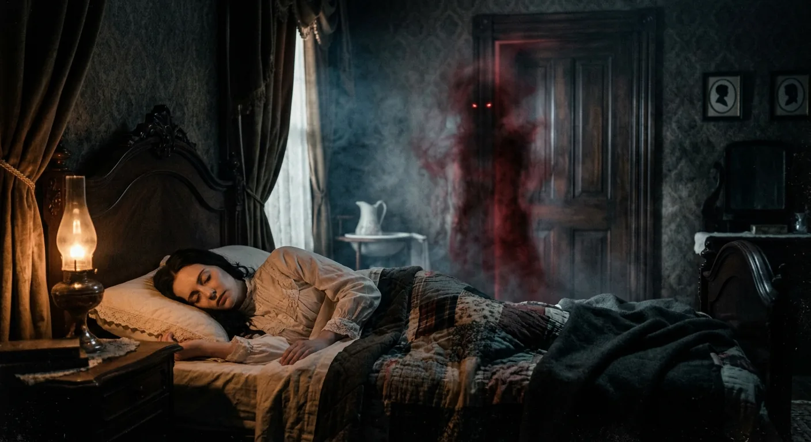
The Hunt Begins at Carfax
On the first of October, in the small hours before dawn, I set out with our party to search the Count's London lair, my mind more at ease than it had been in some considerable time. Mina appeared stronger and more well than I have seen her—so much so that I found myself genuinely relieved she had consented to remain behind while we men undertook this grim work. Her labour in compiling our disparate accounts into one coherent narrative has been invaluable, every point telling as if arranged by a solicitor preparing a brief, and I confess I am glad her part is now finished. The terrible business that lies ahead is no place for a woman, however capable.
Before our departure, we had endured a most unsettling interview with Mr. Renfield, the poor madman whose connection to the Count remains disturbingly unclear. Mr. Morris remarked afterward that if Renfield was not attempting some manner of bluff, he was the sanest lunatic any of us had encountered—and there was something in his earnest pleading that troubled us all. Yet Dr. Seward was right to exercise caution; a man who has prayed with equal fervour for a cat and then attempted to tear out his keeper's throat with his teeth cannot be trusted, however reasonable his philosophy may seem.
At Carfax, Professor Van Helsing distributed our peculiar arsenal: silver crucifixes to be worn near the heart, wreaths of withered garlic blossoms, revolvers and knives for more mundane threats, small electric lamps, and—most sacred of all—portions of the Blessed Wafer. Thus armed against both spiritual and physical menace, we entered that dreadful house. The door yielded to Dr. Seward's skeleton keys with a rusty clang that put me in mind of Lucy's tomb, and we crossed the threshold with Van Helsing's Latin prayer upon our lips.
Within, the dust lay inches thick upon every surface, save where recent footsteps had disturbed it. The whole place seemed thick with some oppressive presence, and I could not shake the sensation that we were not alone—a feeling, I noted, shared by all our company, for we each kept glancing over our shoulders at every shadow. When at last we found the chapel, guided by my own copies of the house plans, the stench that greeted us defied description—a corruption so profound it seemed corruption had itself become corrupt, every foul breath the monster had ever exhaled clinging to those close walls.
Of the fifty earth-boxes we had expected to find, only twenty-nine remained. The rest had been removed, their paths marked in the dust leading toward the great oaken door. We had scarcely begun our examination when the place came alive with rats—thousands of them, their eyes glittering like baleful stars in our lamplight. Lord Godalming, proving himself admirably prepared, threw open the door and summoned three terriers with a silver whistle. The dogs made short work of the vermin, and with their departure the oppressive shadow seemed to lift from us all.
We returned home as dawn quickened in the east, our first night's work accomplished without disaster. Yet when I crept into our room, I found Mina sleeping so softly I had to bend close to hear her breathing. She looked paler than usual, and though she woke at last, it was with a strange blank terror in her eyes, as one startled from a nightmare.
What she recorded in her own journal troubles me deeply, though I did not know its contents then. She wrote of mist creeping toward the house with a sentience of its own, of Renfield's passionate entreaties echoing from below, of a terrible dream in which fog poured through the joinings of her door and gathered into a pillar with a red eye that divided into two—two red eyes, like those Lucy had described, like those I myself had seen in the faces of those awful women in Transylvania. She wrote of a livid white face bending over her through the mist before all went black.
She has convinced herself it was only a dream, the product of an overwrought imagination. She has even taken a sleeping draught to ensure her rest tonight, hoping to keep her fears from alarming us.
But I cannot help wondering, as I set down these words, whether something far more sinister transpired while we were occupied at Carfax—and whether our determination to shield Mina from further involvement has, in truth, left her terribly exposed.
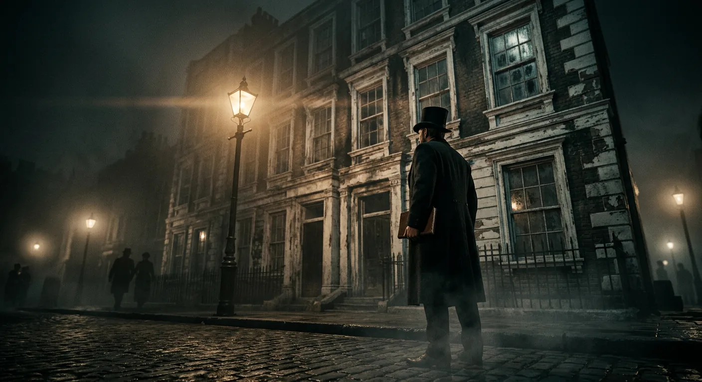
The Hunt for Dracula's London Lairs
Jonathan Harker's investigation into the Count's London refuges continued with the dogged persistence one might expect of a professional man faced with an impossible adversary. On the first evening of October, I found Thomas Snelling at Bethnal Green entirely indisposed—the mere promise of beer in exchange for information had proved sufficient inducement for him to begin his celebrations prematurely, and the fellow was quite useless. His wife, however, a decent sort, directed me to Joseph Smollet at Walworth, who proved altogether more reliable. From a remarkable dog-eared notebook produced from some mysterious pocket about his person, Smollet provided the destinations of boxes removed from Carfax: six to Chicksand Street in Mile End New Town, another six to Jamaica Lane in Bermondsey. The systematic distribution across London's geography suggested the Count intended to establish refuges throughout the city—east and south already accomplished, with north and west surely to follow.
A half-sovereign's worth of information led me to Sam Bloxam, though the man's spelling on the scrap of paper—"Korkrans" for Corcoran's, "depite" for deputy—required some interpretive effort at Potter's Court. Bloxam, when finally located at a cold storage building in Poplar, confirmed what I had feared: he had transported nine boxes to a house in Piccadilly, near a white church, and the old gentleman who had assisted him possessed supernatural strength, lifting great boxes as though they were pounds of tea. The description of this thin old man with a white moustache who seemed unable to throw a shadow—how that phrase thrilled through me! The Count himself had been handling his earth-boxes, which meant our enemy could complete his distribution at any time of his choosing.
The house in Piccadilly proved to be a dusty, long-untenanted mansion with encrusted windows and scaled paint. The estate agents, Mitchell, Sons & Candy, were maddeningly circumspect until I invoked Lord Godalming's name. Their letter confirmed the purchaser as a foreign nobleman—Count de Ville—who had paid in notes over the counter.
Meanwhile, Mina grows paler by the day, sleeping heavily yet waking unrested. I comfort myself that our resolution to keep her from these dreadful matters was correct, though the secrecy pains me. She has become strangely reticent about the Count, shuddering at any mention of him.
Dr. Seward's observations of Renfield add another troubling thread to our tapestry of horrors. The lunatic spoke cryptically of life and souls, claiming he wanted the former but feared being burdened with the latter. His denial of interest in flies and spiders, his assurance that he would never lack the means of life—Seward concluded, with mounting dread, that the Count has been visiting him, promising some higher existence.
Van Helsing declared our day's work significant progress, though the question of how to enter the Piccadilly house without attracting notice remains unresolved. We sat smoking in the study, discussing our options, when a wild yell echoed from Renfield's room—the attendant found him face-down on the floor, covered in blood.
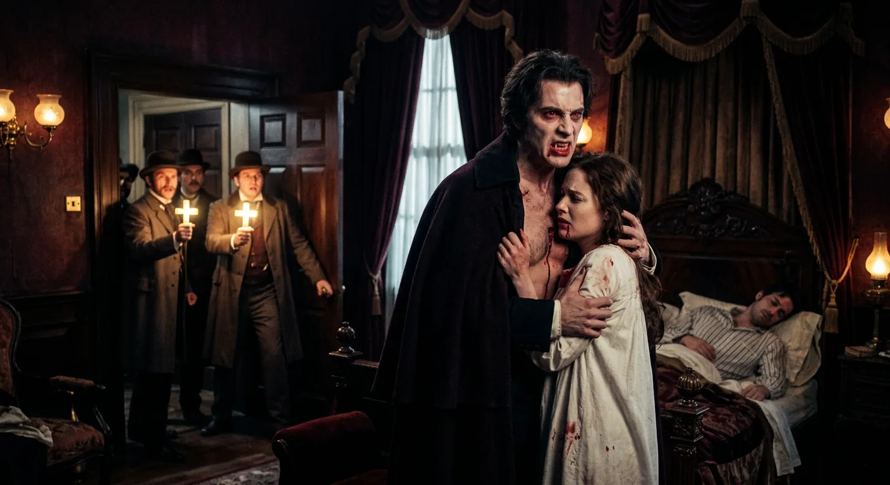
Renfield's Final Testimony
The third of October brings with it such horror as I scarcely have the composure to record, yet record it I must, for in these dark days every detail may prove the difference between salvation and damnation.
It began with Renfield—poor, wretched Renfield—whom I discovered lying in a glittering pool of his own blood, his face beaten beyond recognition, his spine shattered in ways that defied all rational explanation. The attendant stood bewildered, for how could a man break his own back whilst simultaneously dashing his face against the floor? Van Helsing arrived with surgical haste, and together we performed a trephining upon the dying man's skull, hoping to relieve the pressure long enough for him to speak what we both dreaded to hear.
And speak he did. In gasping, faltering breaths, Renfield confessed the terrible truth: the Count had come to him, promising lives upon lives—flies and rats and greater things still—if only he would invite him in. Like some dark parody of Scripture, the vampire had tempted him with dominion over crawling multitudes, and Renfield, that poor soul caught between madness and unholy appetite, had opened the window and called him "Lord and Master." But when Renfield perceived that Mrs. Harker had been visited—when he noticed her pallor, her vitality drained "like tea after the teapot had been watered"—he had tried to stop the monster. He had grappled with the mist itself, seized the Count in his lunatic's grip, and for one desperate moment believed he might prevail. But those burning eyes had turned his strength to water, and the vampire had flung him down like a rag doll before stealing away beneath the door.
We did not wait for Renfield's final breath. Armed with crucifixes and the Sacred Wafer, we burst into the Harkers' chamber—and what I saw there shall haunt me until my dying day. Jonathan lay stupefied upon the bed whilst the Count, that tall black figure with his hellish red eyes, held Mina against his bared breast, forcing her mouth to an open wound as one might force a kitten's nose into milk. Her white nightdress was smeared crimson; a thin stream of blood trickled down her throat.
When the Count saw us, such devilish fury contorted his features that I felt my very heart might cease its beating. But Van Helsing raised the Sacred Wafer, and the monster cowered back—back and back until, when Quincey struck his match to light the gas, there remained nothing but a wisp of vapour trailing beneath the door.
Mina's scream—that wild, despairing cry—seems even now to ring in my ears. Through choking sobs she told us everything: how the Count had threatened to dash Jonathan's brains out if she made a sound, how he had drunk from her throat as he had done before, and then—most terrible of all—how he had opened his own breast and forced her to drink of his blood, binding her to him as "flesh of my flesh, blood of my blood." She is to be his creature now, subject to his call across land or sea.
Arthur discovered that the Count had burned all our manuscripts and phonograph cylinders in the study—though thank God a copy remains in the safe. Quincey tracked a bat flying westward from Renfield's window, seeking some lair other than Carfax. Dawn approaches, and with it the promise that we shall not see the monster again this night.
But as the first red streak of morning light crept across the sky, I watched Jonathan Harker's face grow grey and his hair whiten before my very eyes, and I knew with terrible certainty that the sun rises today upon no more miserable house in all its daily course—and that whatever desperate action we must take, it cannot come soon enough.
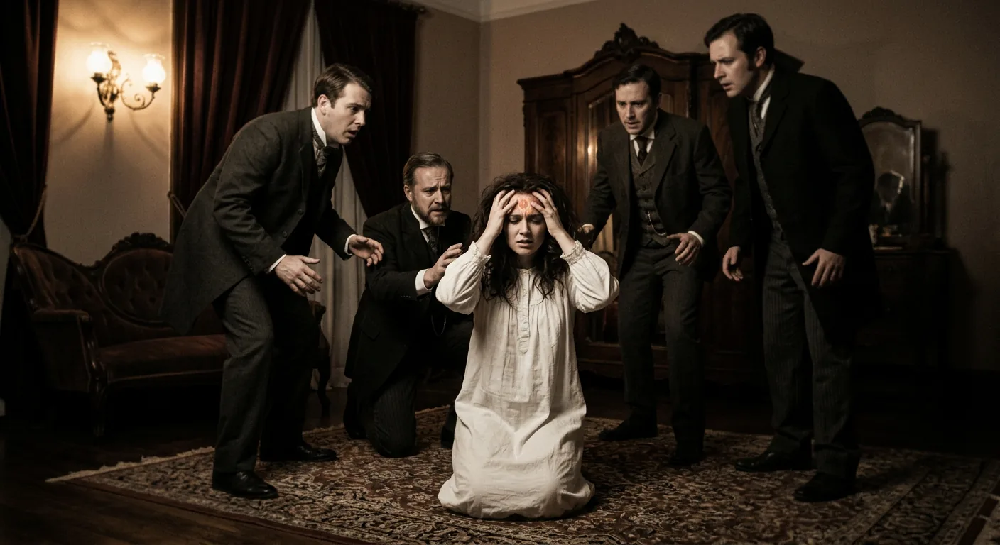
The Living Must Not Die
The third of October finds Jonathan Harker writing with desperate determination, his pen moving across the page as much from necessity as from purpose—for to cease writing would be to succumb to the madness that lurks at the edges of his overwrought mind. The preceding night has wrought terrible changes upon their company, and now they must act whilst daylight affords them protection against their supernatural adversary.
The grim news of Renfield's death opens their council. Dr. Seward relates how he and Van Helsing discovered the poor lunatic broken upon his cell floor, his face crushed and neck snapped—injuries far beyond what any fall from bed might occasion. The attendant speaks of hearing voices, or perhaps a single voice, and the patient's desperate cries to God before the terrible silence fell. Seward determines to record the death as misadventure; the truth would never be believed, and an inquest must be managed with discretion.
It is agreed that Mina shall no longer be kept in ignorance of their proceedings, for concealment has already cost them dearly. Yet when Van Helsing questions whether she fears what she might become—a danger to those she loves—Mina's response chills them all with its quiet resolve. She would take her own life rather than harm another, and should no friend prove willing to grant her such mercy, she would manage the deed herself. Van Helsing, moved to tears, charges her upon her living soul that she must not die whilst the Count yet walks among the Un-Dead, for death now would make her as he is. Mina promises to endure, and in her courage the others find strength renewed.
Van Helsing outlines their strategy with characteristic precision. The Count, having fed heavily upon Mina, will sleep late—a fact the Professor mentions with unfortunate thoughtlessness before the stricken woman. During daylight hours, Dracula is confined to his material form, unable to transform or pass through barriers as he might at night. They must locate and sterilise every earth-box, denying him refuge. The house in Piccadilly likely holds the key—deeds, papers, and clues to his other London lairs.
Jonathan's impatience strains against Van Helsing's measured caution. The Professor counsels patience; they shall enter the Piccadilly house _en règle_, employing a locksmith in broad daylight so as to attract no unwanted attention from the police. Lord Godalming's title will smooth any difficulties, whilst Quincey Morris wisely suggests they avoid using conspicuous carriages in the poorer districts where other boxes await destruction.
Before their departure, Van Helsing attempts to bless Mina with a piece of Sacred Wafer pressed to her forehead. The result is horrifying—the holy object sears her flesh as though it were white-hot metal, and her scream of anguish gives way to wails of despair. "Unclean! Unclean!" she cries, recognising in that burning mark the evidence of her corruption. Van Helsing offers what comfort he can: the scar shall remain only until God sees fit to lift this burden, and they shall all bear their crosses until that day of redemption.
With solemn oaths sworn and farewells spoken, the company proceeds first to Carfax, where they place portions of the Host in each of the earth-boxes, rendering them useless to their enemy. Then onward to Piccadilly, where Lord Godalming and Morris engage a locksmith whilst the others wait in Green Park. The entry accomplished without incident, they discover eight boxes of earth—one fewer than expected—along with papers revealing the Count's other properties and a basin of water reddened with blood. Godalming and Morris depart with the keys to destroy the remaining lairs at Mile End and Bermondsey, whilst the others keep vigil in that vile-smelling house, waiting either for their companions' return or for the arrival of the Count himself.
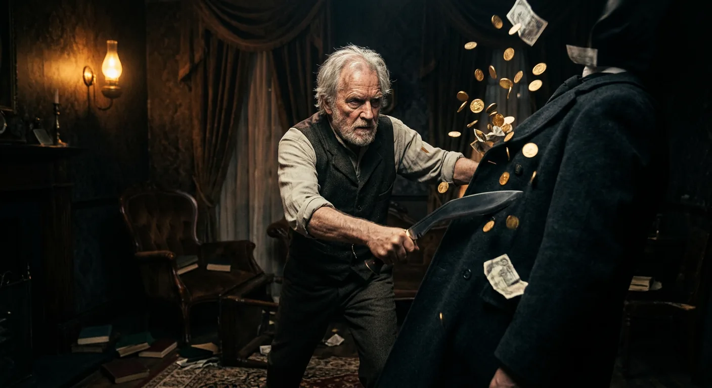
The Monster's Growing Mind
The waiting proved a terrible thing. Professor Van Helsing did his utmost to occupy our minds, though I caught his sidelong glances at poor Harker, whose transformation since yesterday defied belief. The man who had been young and vigorous now appeared ancient, his hair gone white overnight, his face hollowed by grief as though carved by some merciless sculptor. Only his energy remained—a living flame, Van Helsing called it—and perhaps that fierce burning might yet preserve him through this dark hour.
To distract us, the Professor expounded upon the nature of our quarry, drawing from his researches and those of his learned friend Arminus of Buda-Pesth. In life, the Count had been soldier, statesman, and alchemist—a man who dared attend the Scholomance itself, whose mighty brain survived the physical death even as his memory remained incomplete. He had been experimenting, growing in knowledge and power, learning first to command others to move his earth-boxes, then daring to move them himself, scattering his lairs across London. Yet Van Helsing assured us this knowledge came too late for the monster—all but one of his refuges had been sterilised, and the final box would be dealt with before sunset.
A telegram from Mrs. Harker interrupted our deliberations: the Count had been seen leaving Carfax, heading south. Harker's response was fierce—he would sell his soul to destroy the creature—but Van Helsing cautioned patience. The vampire was limited to the powers of man until sunset, and we need only wait for Godalming and Morris to return from their work.
When they arrived with news that twelve more boxes had been destroyed, we prepared our ambush. The Count came with a key, expecting to enter unseen, but we had positioned ourselves strategically. He bounded into the room with panther-like quickness, inhuman in his movement. Harker struck with his kukri knife, narrowly missing the fiend's heart but slashing his coat and sending gold and banknotes scattering across the floor. We advanced with our sacred weapons—crucifix and Host—and saw the monster cower before us, his face contorting with hellish rage before he swept beneath Harker's arm, seized a handful of gold, and crashed through the window in a shower of glass.
From the stable yard he delivered his threat: we would all be sorry, our loved ones were already his, and time—centuries of it—stood on his side. Yet Van Helsing detected fear beneath the bravado. Why else had he hurried so? Why grasp at money?
We returned to Mrs. Harker, whose bravery shone through her pallor. She reminded us that even this wretched creature deserved pity, that destroying his worser part might grant him spiritual peace—words that moved us all to tears, though her husband could scarcely contain his rage.
That night, Mina woke me before dawn with an idea. Van Helsing must hypnotise her immediately, for through her cursed connection to the Count she might perceive his whereabouts. Under the Professor's passes, she described darkness, the lapping of water, the creaking of chains—she was aboard a ship, weighing anchor. The Count was fleeing England by sea, his last earth-box with him.
Van Helsing's words after she woke fell upon us like a sentence: we must pursue him to the very jaws of Hell if necessary, for though he might live centuries, Mina was but mortal woman—and the mark upon her throat meant time itself had become our enemy.
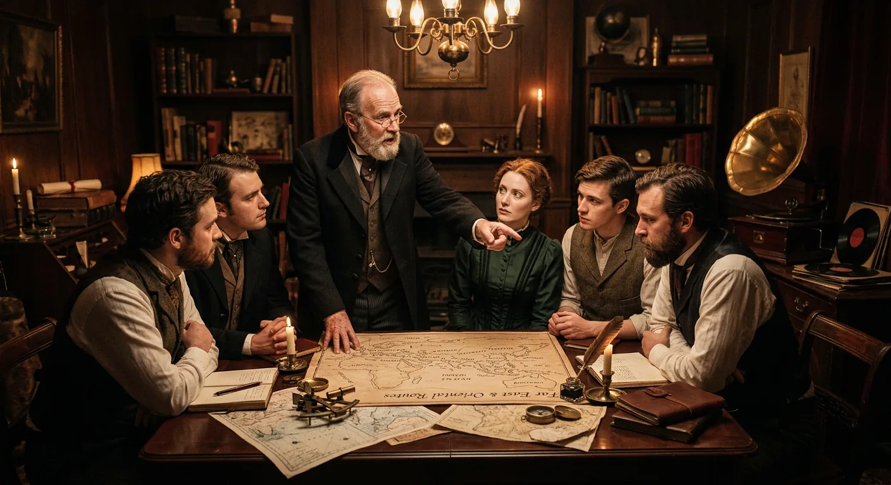
The Hunt Turns Toward Transylvania
The chapter opens with Van Helsing's recorded message to Jonathan Harker, delivered through the curious medium of Dr. Seward's phonograph—that mechanical oracle through which so much of their strange chronicle has been preserved. The Professor's voice carries both triumph and warning: the Count has fled England, retreating to his Transylvanian stronghold aboard some vessel bound for the Black Sea. It was, Van Helsing assures them, their enemy's last desperate gambit—when Lucy's tomb proved no sanctuary and his final earth-box lay vulnerable, the ancient creature made straight for the only refuge remaining to him. Yet in this retreat, the Professor finds cause for hope: a monster who required centuries to reach London has been driven out in mere days. They are strong, he insists, strong together.
When Jonathan reads these words to Mina, her spirits lift considerably. The crisp autumn sunlight streaming through the windows makes the whole nightmare seem almost impossible to credit—until Jonathan's gaze falls upon the red scar marking his wife's white forehead, that terrible brand of the vampire's baptism which permits no comfortable disbelief.
The company reconvenes that evening, and Van Helsing recounts their investigations at Lloyd's and Doolittle's Wharf, where rough-spoken men of the docks—rendered cooperative by Quincey's judicious distribution of coins and the universal solvent of ale—described the Count's hurried arrangements. A tall, pale man in an incongruous straw hat had come asking after Black Sea passage, had driven his great box to the *Czarina Catherine* himself, lifting it with inhuman strength, and had argued with the polyglot-swearing captain about its placement. Then, most telling of all, a supernatural fog had descended upon the wharf alone, holding the ship until the Count had inspected his earth-box and departed unseen. The vessel now sails for Varna.
Van Helsing delivers an impassioned speech on the necessity of pursuit. This creature who has infected Mina—for she will become as he is should she die with his poison in her veins—represents a threat beyond measure. Unlike other Un-Dead, the Count possesses the accumulated wisdom of centuries, the patience to study new tongues and new civilizations, and the terrible ambition to flourish among teeming human populations. He is a tiger who has tasted man's blood and will never cease to prowl. They must pursue him eastward, like knights of the Cross journeying toward the sunrise, ministers of God's will against the forces of darkness.
Yet even as they plan, a new complication emerges. Dr. Seward and Van Helsing observe troubling changes in Mina—her teeth growing sharper, her silences more pronounced, echoing poor Lucy's decline. More dangerous still: if their hypnotic connection allows Mina to sense the Count's perceptions, might not that communion flow both directions? Might the Count compel her to reveal their plans? With heavy hearts, they resolve she must be excluded from their councils.
But Mina, with characteristic wisdom and selfless courage, anticipates them. She withdraws voluntarily from their deliberations and extracts from Jonathan a solemn promise never to share their battle plans with her. She knows the Count can summon her, can compel her through trickery even against her husband—and she will not become their enemy's instrument. Yet she insists she must accompany them to Varna, for she is safer within their protection, and her hypnotic visions may prove invaluable.
Van Helsing accedes: Madam Mina shall travel with them. They will board the ship upon arrival, seal the Count's box with wild rose to prevent his emergence, and destroy him in his helpless daytime slumber. Quincey Morris adds Winchesters to their arsenal, and all set their earthly affairs in order. Jonathan makes his will, Mina his sole heir.
As sunset approaches once more, bringing with it fresh anxieties and the terrible rhythm of Mina's communion with their enemy, the company prepares to depart for Varna—racing overland to intercept a ship bearing ancient evil home to its mountain fastness.
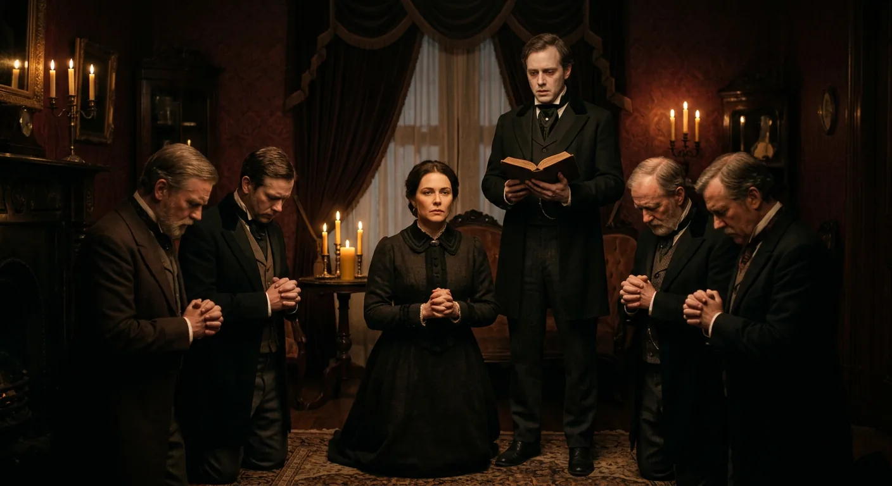
Mina's Solemn Oath of Sacrifice
On the evening of October 11th, the company gathered at Mrs. Harker's request during that peculiar interval before sunset when her soul, for a brief span, remained free from the Count's corrupting influence. There was constraint in her manner at first, the visible evidence of some fierce internal struggle, but within moments she mastered herself and addressed them all with terrible solemnity. She spoke of poison in her blood—poison that must destroy her unless deliverance came—and implored them to understand that her very soul hung in the balance. Yet when Van Helsing pressed her to name the way out she would not take, she answered with unflinching clarity: death by her own hand or another's before the greater evil could be wrought. She would not claim that easy escape, not whilst hope remained, not whilst the bitter task of destroying the Count still lay before them.
What she demanded instead was harder still. She required an oath from each man present—even from her beloved Jonathan—that should she change beyond redemption, they would kill her without hesitation, drive the stake through her heart, sever her head, and grant her the peace they had given poor Lucy. One by one they knelt before her: Quincey Morris first, rough-spoken yet tender; then Van Helsing, Lord Godalming, and Seward himself. When at last Jonathan's turn came, his face ashen and his hair seeming whiter still against his pallid cheeks, Mina urged him with infinite pity, reminding him that brave men throughout history had slain their own wives rather than let them fall into the hands of the enemy. Van Helsing swore again that should such mercy be required, it would be Jonathan's loving hand that set her free.
Then, with a strange smile of relief, Mina offered one final request: that the Burial Service be read over her, so that Jonathan's voice speaking those sacred words might remain forever in her memory. He complied, though broken with emotion, and the little company knelt around her in a scene at once horrible and unutterably sweet. The solemnity of it comforted them all, and when the silence of Mina's relapse descended, it seemed less full of despair than any had feared.
The narrative then leaps forward to Varna, where the band arrived on October 15th after a relentless journey aboard the Orient Express. Mina travelled well, sleeping much, though at sunrise and sunset Van Helsing hypnotised her to learn what she could perceive through her blood-link to the Count. Her answers were always the same: darkness, lapping waves, rushing water, the strain of canvas and cordage. The *Czarina Catherine* was still at sea. Days of anxious waiting followed. Lord Godalming received daily telegrams reporting no sighting of the vessel; arrangements were made with local officials and the ship's agents so that the moment she docked, they could board her and destroy the fiend within his earthen box.
Yet by October 27th, Van Helsing grew fearful. The ship had not appeared, and Mina's trances revealed only fainter waves. Then on October 28th came the telegram that shattered their plans: the *Czarina Catherine* had entered Galatz, not Varna—a deviation none had anticipated. The Count had somehow eluded them. Van Helsing raised his hand briefly heavenward in protest, then set his jaw and called for action. Mina herself provided the train schedule, for she had studied such things in preparation, and proved brighter and more like her old self than she had been in weeks.
Alone with Seward, Van Helsing confided his hope: that in cutting himself off from Mina's mind to prevent her betraying his movements, the Count had unwittingly freed her soul somewhat from his dominion. More crucially, the blood baptism he had forced upon her now worked against him—she could still perceive him during trance, though he could no longer read her thoughts. Mina herself, displaying the keen intellect Van Helsing so admired, reasoned that the Count's criminal nature was that of a child-brain: clever yet limited, selfish and therefore predictable. He would flee homeward by the route he knew, seeking the safety of his castle.
And so the company prepared to pursue him into the dark heart of his own land, armed with knowledge, faith, and terrible resolve, racing against time itself as the monster hastened toward his Transylvanian lair.
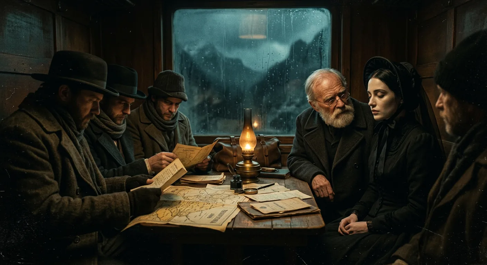
The Race to Galatz
The twenty-ninth of October finds our company aboard the train from Varna to Galatz, each member having discharged his preparations as thoroughly as circumstance and forethought would allow, yet all of us travelling in that peculiar agony of expectation which attends the hunter who knows his quarry moves but cannot see in which direction. Mrs. Harker's hypnotic efforts grow ever more laboured—the trance comes slower now, requiring greater exertion from Van Helsing, and her utterances arrive with reluctance where once they flowed freely. Through her lips we learn that the Count's vessel has reached harbour: she speaks of no waves, only the soft swirl of water against hawser, the creak of oars, tramping feet overhead, and then—a gleam of light, air moving upon her face. The coffin-box has been opened; the earth-chest approaches land.
Van Helsing reasons keenly upon the matter. Should the Count fail to reach shore before dawn, he must lie concealed through the whole of the following day, boxed and vulnerable, perhaps discoverable by customs men with inconvenient questions about cargo. Our hopes rest upon such delay. Yet when Mrs. Harker's morning trance yields only darkness, lapping water, and the creaking of wood, we are left to travel onward with nothing but fragmentary intelligence and mounting dread. Her evening words prove stranger still—something passing her like cold wind, the howling of wolves, fierce-falling water—and she wakes shuddering, exhausted, able to recall nothing.
At Galatz we divide our forces with military precision. Jonathan, Van Helsing, and Dr. Seward call upon the shipping agents and board the *Czarina Catherine*, where Captain Donelson—a Scotsman of mingled superstition and commercial shrewdness—recounts his uncanny voyage: favourable winds that seemed the Devil's own work, impenetrable fogs that lifted only when convenient, and Romanian crewmen who wished to heave a certain great box overboard rather than suffer whatever curse they sensed within it. The box was collected before sunrise by one Immanuel Hildesheim, acting upon instructions from London, and passed thence to a Slovak trader named Skinsky—who is found that same day with his throat torn open behind the churchyard wall of St. Peter, another life blotted out to conceal the Count's trail.
We return to Mina heavy-hearted, for the scent has gone cold—until that remarkable woman, working methodically through every document and map whilst we rest, constructs a memorandum of deduction worthy of the Professor himself. By process of exclusion she reasons that Dracula must travel by water, avoiding the risks of road and rail; that the Sereth or Pruth rivers offer passage toward his castle; and that the Bistritza, joining at Fundu, loops closest to the Borgo Pass. The sounds she heard in trance—cattle lowing, water at ear-level, wood creaking—bespeak an open boat working upstream. Our enemy is homeward bound.
A council of war follows swiftly. Lord Godalming and Jonathan shall pursue by steam launch; Morris and Seward ride the riverbank with horses and Winchesters; Van Helsing will take Mina overland through Veresti and the Borgo Pass, into the very heart of Transylvania, where her hypnotic gift may guide them to the castle even as we close the net from below. Jonathan protests bitterly—what madness to bring his wife toward those moonlit horrors he himself once fled?—but yields at last, for we are in the hands of God, and there is no other way.
The company scatters into the gathering cold, armed and provisioned, each party racing against time and the shortening days, whilst somewhere ahead, borne by Slovak boatmen along the Bistritza's dark current, Dracula lies coffined and powerless in his earth-box—waiting only for nightfall or the sanctuary of his ancient fortress to rise once more.
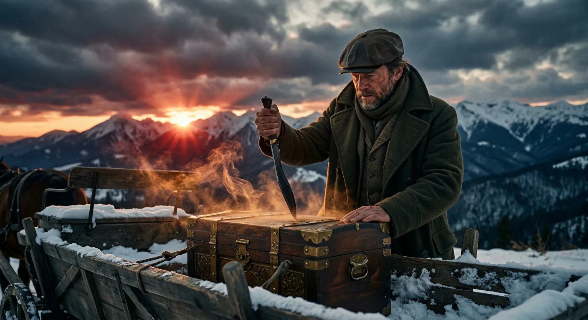
The Race to the Borgo Pass
In her journal, Mina Harker documents the race across the Carpathian landscape toward the Borgo Pass, a journey marked by swift exchanges of horses and the peculiar wariness of peasant folk who, glimpsing the scar upon her forehead, make ancient gestures against the evil eye and season her food with quantities of garlic she cannot abide. The country itself proves beautiful and wild, its people brave yet steeped in superstition, and Mina takes to wearing hat and veil to avoid their fearful scrutiny. Dr. Van Helsing, tireless and resolute even in sleep, hypnotises her at sunset; she speaks of darkness, lapping water, creaking wood—their enemy still upon the river. Though she writes that she feels no fear for Jonathan or herself, a strange heaviness settles over them both as they ascend into the mountains, the great spurs of the Carpathians gathering ever closer.
Van Helsing's memorandum to Dr. Seward takes up the narrative thread as the journey darkens in ways beyond weather. Mina sleeps excessively, loses her appetite, and cannot be roused; the Professor's hypnotic power wanes daily until it fails altogether. Nearing the castle at sunset, she grows alarmingly bright, refuses food yet claims she has already eaten, and watches him through the night with luminous eyes—symptoms that fill Van Helsing with dread he dare not voice. He draws a ring of sacred Wafer around her, and when the spectral forms of the three vampire women materialise in the snow, calling Mina "sister," he is gladdened to see terror and repulsion in her face: her soul remains safe, though she cannot cross the consecrated boundary. The horses perish in the freezing night, yet dawn brings relief and purpose.
Armed with blacksmith's hammer and holy implements, Van Helsing enters the castle and descends into the old chapel. Jonathan's diary serves as his guide, and despite the paralysing allure of the voluptuous Un-Dead women, Mina's distant cry rouses him from enchantment. He performs the grim butcher-work—stake and severing blade—upon each of the three sisters, who crumble to dust as centuries of denied death reclaim them. In Dracula's own great tomb he places the sacred Wafer, barring the King-Vampire's return forever. When he steps back into the circle, Mina wakes, pale yet pure-eyed, urging him toward Jonathan, whose approach she knows by instinct.
The converging parties race against sunset and snowstorm. Jonathan and Lord Godalming pursue from the north, Quincey Morris and Dr. Seward from the south, while Van Helsing and Mina watch from the heights. In a desperate clash with the Szgany gypsies, Jonathan wrenches the great chest from the leiter-wagon and tears it open alongside Morris. The sun touches the mountain just as Jonathan's kukri shears through the Count's throat and Morris's bowie plunges into his heart; Dracula's body crumbles to dust before their eyes, a look of peace settling upon his face at the last. Yet victory exacts its price: Quincey Morris, mortally wounded by gypsy knives, sinks against Jonathan's shoulder, his final gaze upon Mina's forehead, stainless as the snow—the curse lifted.
A brief coda, set seven years hence, tells of Mina and Jonathan's son, born on the anniversary of Morris's death and bearing the names of all their little band, though they call him simply Quincey. The gathered papers prove nothing to outsiders—nothing but typewriting and notebooks—yet as Van Helsing observes with the boy upon his knee, they want no proofs; the child will someday understand how some men so loved his mother that they dared much for her sake.
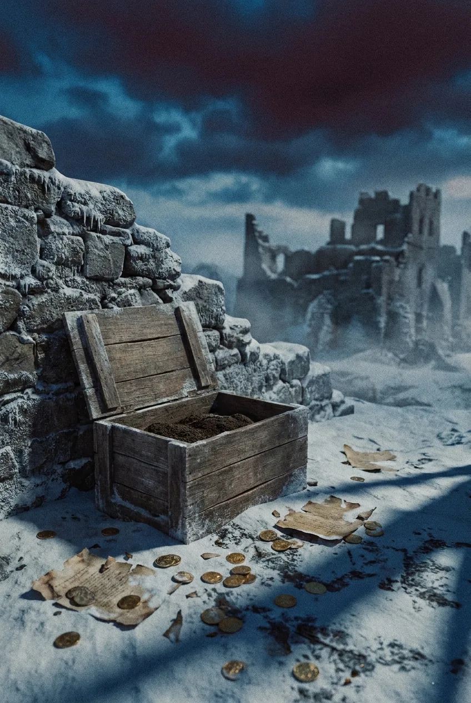